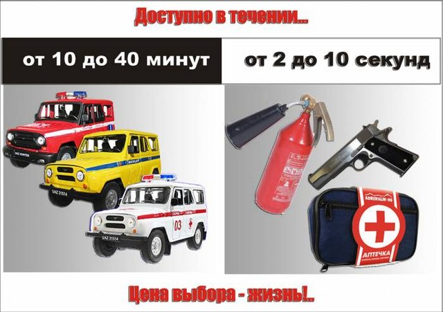

Прощай, оружие! — претензия на аналитику
Под таким заголовком был опубликован пост Ирины Валентиновны Рахмани, в котором она собрала значительную часть хоплофобстких мифов. Давайте тоже это прочитаем, почитаем комменты и обсудим, если что еще не понятно. Для разнообразия не буду копипастить стандартные вопросы/ответы из своей ранней статьи, а буду писать все заново — для свежести взгляда.
"Статья незапланированная: пишу в режиме форс-мажора, как ответ на постоянно задаваемые мне вопросы. То, что сейчас буду разжёвывать, и так понятно, осознанно или интуитивно, цивилизованным людям.
Но в последнее время люди нецивилизованные по зомбиящику и в сетевой паутине всё активнее пытаются протолкнуть идею легалайза огнестрела (ЛО). По-человечески мне понятны, конечно, их ощущения собственной беззащитности от уличных, коммерческих, властных и других бандитов. Но сейчас постараюсь взглянуть на проблему не глазами напуганного обывателя, а глазами системщика. Немало достаточно компетентных людей (тот же Гоблин), оперируя логикой и примерами, публично высказывались против ЛО, но рассмотрение проблемы в комплексе, системно, во всех ракурсах и со всеми аспектами - мне не встречалось. Попытаюсь восполнить этот пробел".
Интересное начало. Ладно, не буду придираться к тому, что речь идет не о легализации огнестрельного оружия (вон у меня в ружейном шкафу — вполне легальный Ремингтон 870), а о легализации короткоствольного оружия самообороны (далее — КС), т.е. пистолетов и револьверов. Т.е. дамочка сама не знает, о чем говорит.
Но вот тезис о "людях нецивилизованных" как понимать? Может, "цивилизованные люди не должны владеть оружием"? Объясните это американцам, например. Да и мне лично как-то пофиг, считают русских "цивилизованными" или же нет — по сути от этого ничего не меняется. Или же это "русским нельзя, дикари-с"? Русофобия — это не аргумент, знаете ли.
Так что, вероятнее всего, оговорка по Фрейду (tm): суть в том, что цивилизованные люди не хотят, чтобы русские владели оружием самообороны. Интересно, а кто именно эти люди?
Что касается претензий на системность, то от скромности Ирина Валентиновна явно не умрет. Заявка Гоблина как компетентного эксперта в вопросе легалайза КС — это как-то, скажем, странно. С чего это неплохой переводчик фильмов — авторитет в вопросе КС? Может быть, по "логике" вида "он же типа старшим уполномоченным был"? Я лично тут никакой логики не вижу. Что же касается его типа аргументации, то я ее уже разбирал ранее, как и показал особенности психики прогибициониста на примере этого самого Гоблина.
Далее -- комментарии:
mach_holy: — нет ответа на главный вопрос — Вы сами-то почему против? Вы что, не сможете избежать соблазна пойти и перестрелять десяток старушек у подъезда или пяток школьников у ближайшей школы, окажись у вас под рукой заряженный огнестрел-короткоствол? Пусть каждый сам уже, наконец, за себя отвечает, как говорится: Веллеру-Веллерово, Гоблину-Гоблиново, Ирваре-Ирварово и каждому свое.
Ну, не нужен вам лично пистолет, опасаетесь, что не совладаете с чувством вседозволенности (ведь такое чувство, предположительно, сразу возникает, стоит только взять в руки оружие?) так не покупайте. Но почему из-за ваших личных страхов другие не могут иметь возможности приобрести его?
Я вот не хочу покупать себе огнестрел, но за то, чтобы разрешить его продажу. Мне не нравится, когда какие-то неизвестные мне дяди и тети за меня решают — что мне можно, а что нельзя.
В свое время шесть лет имел пистолет на "постоянном ношении", то есть шесть лет таскал его в подмышечной кобуре. Старушек так и не перестрелял во дворе ни разу и мальчишек-девчонок в ближайшей школе тоже, как-то даже в голову такое не приходило. И насмотрелся за это время, как чайники в погонах, те, кому официально тоже было разрешено постоянное ношение оружия, причем разных правоохранительных ведомств, мирных граждан налево-направо из табельного оружия жизни лишали, инвалидами делали, калеками. Граждане при этом никаких противоправных деяний не совершали, это правоохранители такие у нас в стране. Феноменально то, что против настоящих бандитов то же самое оружие они почему-то редко применять решались. И ведь выкручивались потом почти все "правоохранители", ни один под суд не пошел. А за простых граждан, не облеченных доверием гос-ва на ношение оружия, было обидно и просто боязно. С одной стороны, их бандиты мочат из огнестрелов и просто режут, с другой — "правоохранители".
И как до вас не дойдет, что весь вот этот беспредел с вашей подачи происходит и таких, как вы, "блюстителей ЧУЖОЙ нравственности"?
Есть такое известное высказывание какого-то политика позднего средневековья, кажется: "Сударь, мне глубоко противна ваша точка зрения, но я готов отдать жизнь за то, чтобы вы имели возможность её высказать".
Так вот, вы готовы одать жизни за то, чтобы в России главенствовала несвобода, только не свою и согласных с вами, а чужие жизни — людей которые не смогут защитить свои жизни от беспредела, как бандитского, так и чиновничьего-опогоненного.
Вы можете не верить в свои моральные силы — неумение справиться с чувством собственной сверхзначимости, когда у вас в руках шпалер, но какое право вы имеете относить всех остальных граждан России к таким же психически неустойчивым особям? Кто вам дал это право?
irvara: — Твои рассуждения застряли на детско-подростковом уровне "хочу-не хочу". Твоё ХОЧУ "иметь огнестрел, чтобы защищать МОЮ жизнь" наталкивается на моё НЕ ХОЧУ "чтобы многочисленные неадекваты шастали вооруженные опасными предметами по улице, делая МОЮ жизнь опаснее". И кто сказал, что твои "хочухи" важнее моих? Это я тебе объясняю на подростковом твоём уровне. А взрослые люди оперируют понятиями общественной целесообразности и вредности/полезности, о чём, собственно, и написана статья.
mpopenker: — а с чего Ваши хочухи должны быть важнее? Взрослые люди оперируют имеющимися статистическими фактами, которые говорят, что между легализацией короткоствола и увеличением угроз одной личности (т.е. ростом уровня преступности) в масштабе всего общества корреляции нет; более того, легализация короткоствола зачастую прямо коррелирует со снижением насильственной преступности.
irvara: — Уже говорила одному оппоненту,что арифметика (статистика) — не единственная "доказательная наука" (не наука вообще), есть другие философии-психологии-логики, которые при отсутствии у них "цифирей" тем не менее многие вещи доказывают. А с калькулятором и линейкой решать сложные проблемы - детсад.
Обратите внимание на два фактора.
Во-1, мадам НЕ ХОЧЕТ и проецирует, что другие ХОТЯТ, и все. "Рассуждения застряли на детско-подростковом уровне" -- это проекция.
Во-2, когда ей толсто намекают на статистику и проч., она ударяется в бред "есть другие философии-психологии-логики, которые при отсутствии у них "цифирей" тем не менее многие вещи доказывают" — это про что, собсно? А пофиг, про что, главное — это типа дает возможность игнорировать аргументацию без контраргументов.
"Итак: поехали. «Коротко» — не получится (жевать, так жевать), но «ясно» - обещаю."
Концептуальный аспект
"а) Практически все сторонники ЛО на вопрос почему они его так добиваются отвечают с незначительными вариациями одинаково: потому, что нас не защищает государство. Значит, на вопрос: «Если будет обеспечена гарантированная государственная защита, будете ли вы настаивать на ЛО с его признаваемой и вами головной болью в виде прохождения комиссий, получения разрешений, регулярных тренировок по стрельбе, соблюдения жестких условий хранения, постоянного таскания с собой железа и др.?» — по логике вещей они должны ответить отрицательно.
Веллер, взгляды которого во многом разделяю, будучи сторонником ЛО, пишет: «когда наша преступность будет на низком уровне — проведём референдум, и, возможно, народ сдаст оружие, чтоб дети в школе случайно не палили и вор ствол не украл»
Отстаивающий ЛО блогер Гиперпрапор, один из немногих, реально разбирающийся в теме и приводящий продуманные аргументы, а не примитив, как большинство его «одно»-мысленников, в разговоре со мной признал: «Сейчас — мы недостаточно развиты, и нам НУЖНА эта мера»
То есть: никто из сторонников ЛО не сказал, что огнестрел — это просто обычный и естественный атрибут любого нормального человека, а, наоборот, в неявной форме, но озвучил: «да, зло, да не от хорошей жизни, да, надеюсь, что это только временно»".
Оригинально. Из пары примеров типа следует "никто" :-)
Вот я, сторонник легализации КС, считаю, что КС — это обычный и естественный атрибут любого нормального человека. Как и нож, например.
Кроме того, вопрос не сводится исключительно к самообороне от людей — это только для нее верно "мы недостаточно развиты, и нам НУЖНА эта мера". Скажем, в случае нападения животных — весьма эффективно. Можно, конечно, заявить, что случаи бешенства — это тоже такое недоразвитие, но давайте все же рассуждать в рамках современного социума, а не фантазировать о некоей стране дивных-предивных эльфов.
Дополнительно — обратите внимание на цитату Веллера (не знаю, есть ли у него такое, смотрим на сам тезис): "возможно, народ сдаст оружие, чтоб... вор ствол не украл". Что это значит?
А это значит, что: 1) в об-ве, где люди типа добровольно сдадут оружие, воровство есть — т.е. предлагается от него не обороняться эффективно в случае контакта с вором; 2) вору зачем-то КС нужен, раз он его украсть захочет. Продать он его сможет только другому преступнику — т.е. преступники вооружаются, а граждане в это время добровольно разоружаются.
Где логика?
"б) Второй, распространённый аргумент сторонников ЛО, звучит так: народ, вооружённый огнестрелом (почему не чем-то другим, ружьями, например?) может заставить власть быть такой, какой она и должна быть: исполняющей свои обязанности по отношению к населению. Вплоть даже до смены её на другую, нормальную и, значит, нас защищающую.. К вопросу о несостоятельности идеи управлять властью с помощью оружия я ещё вернусь. А пока констатирую,что отсюда мы плавно возвращаемся в пункт а), где тоже ключевым словом была «защита» и основная цель заключалась именно в ней."
"Отступление. Государства с самого начала образовывались именно для защиты. Остальные цели и функции появились потом. Без потребности в государстве – можно было бы всем разбежаться по лесам, защищаться от соседей самостоятельно и вести натуральное хозяйство. Но осознав, что это глупо и нецелесообразно, люди договорились: будем жить вместе, создавая себе максимально приемлемые условия проживания и поставим власть, которая для реализации этого обеспечит нам защиту от врагов внешних и внутренних (то есть будет следить за установленными нами правилами и законами, защищающими нас в том числе и от нанесения вреда друг другу). Ясно, что если государство не справляется с защитой от внешних врагов – долго просуществовать оно не сможет. И чтобы исторически не сгинуть — надо менять в таком государстве власть на такую, которая обеспечит эту защиту. Здесь понятно. Но когда власть не справляется с внутренней защитой, такой же вывод некоторым гражданам почему-то не приходит в голову. "
Таня Ефременко (просматриваю статью на предмет опечаток, к настоящему моменту не могу удержаться от комментариев): ружья с точки зрения автора — не огнестрел?? =) До чего глубокая проработка темы.
voiceoftheworld: Чистый бред. Государства образовывались как инструмент для эксплуатации крестьян элитой. А также для защиты элиты от других элит руками черни. Изучайте историю.
voiceoftheworld: Она себя подсознательно уже причисляет к классу "правителей", вот в чем проблема. Для нее государство - это уже не "они", а "мы".
irvara: Вы, вроде, читаете мои посты, а посты про Швейцарию не осмыслили. Там,ежели чего не так, социум быстренько через референдум исправляет эти "зигзаги" власти, да и вообще: попробуй со швейцарцами проделай такие "эксперименты", как делают с нами любимые власти — быстренько слетишь со всех постов.Так что, это не бред и безумие, а вполне реальность,правда не наша.Там — общество,а у нас —стадо.
Хе. Как раз в Швейцарии с оружием у граждан все просто замечательно. Вспомнилось про унтер-офицерскую вдову, с чего бы это?
irvara: государства создавались для ЗАЩИТЫ. Защиту понимаю в широком смысле — и от внешних врагов, и от внутренних беспредельщиков и, как ни непривычно это звучит, друг от друга. Всегда люди просили варягов, царей и др. "Приходи,батюшка, к нам на царствование и защити нас от проклятых (далее можно дать разнообразный перечень врагов), а не говорили :"Приходи нас поэксплуатировать". За защиту они были готовы отдавать часть заработанного, потому, что враги отнимали всё. Это, конечно, упрощенная, но схема возникновения государств.
Отмечу русофобский фейк про "приглашение варягов". Но не суть -- просто интересно, кем же надо быть, чтобы считать, что некогда крестьяне и т.п. метались в поисках правителей -- мол, "приходите к нам защитить, но не в коем разе не эксплуатируйте!". Государство всегда строится "сверху" укрупнением власти. Собсно, тот же рэкет, только социально одобряемый: "я теперь вас защищаю, а вы платите дань", А "давай ты нас будешь защищать" -- это уже не народ, а правитель рангом поменьше...
Не будем отвлекаться, но какой полет мысли, как высоко она летит, оторвавшись от знаний истории!
Когда-то давно наивные советские граждане мечтали, что "прогонят злобных коммунистов и заживут, как в красивой Америке из вестернов". В 1990-е открылась Страшная Правда — "героями вестернов" предлагалось стать далеко не всем гражданам, а лишь некоторым особо избранным. Остальным предлагалась разве что роль случайных "мишеней" в бандитских разборках. А также роль "терпил", потерявших жилье и/или работу из-за бандитских разборок на ином, экономическом уровне. Со временем практически все разборки перешли на этот уровень, былые "авторитеты" получили статус мэров и депутатов (мне это когда-то казалось всего лишь "красивой фразой", пока я не начала всерьез изучать криминальную тематику и не узнала, что это самая банальная правда, которая даже особо не скрывается).
И что мы видим в словах irvara? Это логика рэкетира, остепенившегося, получившего мандат и теперь вспоминающего бурную молодость. "Слышь, пацаны, ну вы же понимаете, народец он такой, жалкий — мы бабло не отожмем, другие отожмут... К нам ларечники часто сами приходили, мол, Кривой, защити меня от Косого, платить буду. Ну мы типа и помогали им, че мы, звери что ли? Вот так, пацаны, и строится оно, государство" *звук отрыжки*.
"Получается, что общая претензия к власти и поставленная перед ней задача и у сторонников и у противников ЛО одна: выполнение властью её главнейшей обязанности — защиты населения.
Цель одна, но сторонники ЛО почему-то решили, что должны взвалить эту обязанность власти на свои мужественные плечи или, как минимум, «временно помочь ей в этом». Противники ЛО, наоборот, считают, что каждый должен выполнять свои обязанности.
Этим уже сказано главное. В постановке самого вопроса содержится и ответ. Здесь можно было бы поставить точку и закрыть тему. Но всё-таки не поленюсь этого змея, Легалайза Огнестреловича , добить до конца со всех его сторон — аспектов".
 hyperprapor:
— Во-первых, задача полиции — не защита граждан, а тупо охрана
правопорядка. Что и было подтверждено конституционным судом США. Впрочем, можете
попробовать подать в суд на любую полицию с требованием компенсации жертвам
насилия. Если это их обязанность — защита граждан, так было бы логично отвечать
за неспособность обеспечивать эту безопасность. Во-вторых, это не
взаимоисключающие, а взаимодополняющие параметры. Оружие, вооруженная охрана —
это непосредственная защита. Здесь и сейчас. Полиция, видеонаблюдение, и тыды —
это ДО и ПОСЛЕ. Но не ВОВРЕМЯ.
hyperprapor:
— Во-первых, задача полиции — не защита граждан, а тупо охрана
правопорядка. Что и было подтверждено конституционным судом США. Впрочем, можете
попробовать подать в суд на любую полицию с требованием компенсации жертвам
насилия. Если это их обязанность — защита граждан, так было бы логично отвечать
за неспособность обеспечивать эту безопасность. Во-вторых, это не
взаимоисключающие, а взаимодополняющие параметры. Оружие, вооруженная охрана —
это непосредственная защита. Здесь и сейчас. Полиция, видеонаблюдение, и тыды —
это ДО и ПОСЛЕ. Но не ВОВРЕМЯ.
seawolf_533:
а) Как одно из самых эффективных (особенно зимой) портативных инструментов самообороны в ряду электрошокеров, ножей, кастетов, газовых баллончиков, травматов, при невысокой летальности относительно дробовиков, винтовок и карабинов.
б) Почему именно пистолет/револьвер, а не сразу гранатомёт? Потому что КС неплохо управляем при стрельбе, и может обеспечить достаточную избирательность поражаемых целей. Кусок свинца летит в том направлении, в котором направлен ствол, и поражает только выбранную цель. Граната же взрывом и осколками поражает всё и вся вокруг себя.
в) Ни одно из вышеперечисленных средств самообороны(ножи, баллончики, травматы и т.д.) не заменяло собой функций полицейского, а лишь дополняло. КС также будет дополнять функции защиты здесь и сейчас до приезда наряда. Или предоставит временной гандикап для того, чтобы просто унести ноги.
г) Ни о какой принудительной короткостволизации речь не идёт. Это право. Не обязанность. Дело добровольное. Даже в каком-то роде честь. Потому как не каждому захотевшему воспользоваться этим правом нужно предоставлять его. Только законопослушным и психически нормальным гражданам.
naganoff: В руках преступника оружие — зло. В руках нормального гражданина оно — добро. Это — аксиома.
Конечно, оружие — не от хорошей жизни. Но мы не в сказке живём. В той жизни, в которой мы живём, оружие — естественный атрибут абсолютно любого нормального человека, который изъявит желание его получить. И этот вопрос глубже — он затрагивает не только право гражданина на самооборону. Ведь если у людей появится оружие — они почувствуют уверенность в себе и своих силах, и это сразу приведёт к повышению гражданского самосознания. Это не на руку власти.
Переходим к следующему «убойному» тезису: «Общая претензия к власти и поставленная перед ней задача и у сторонников и у противников ЛО одна: выполнение властью её главнейшей обязанности — защиты населения. Цель одна, но сторонники ЛО почему-то решили, что должны взвалить эту обязанность власти на свои мужественные плечи или, как минимум, «временно помочь ей в этом». Противники ЛО, наоборот, считают, что каждый должен выполнять свои обязанности».
А если власть не справляется с обязанностями? Если людей отстреливают на улицах уже средь бела дня бандиты из незаконных пистолетов (которым наплевать, что у них нет разрешения), а криминальная хроника просто пестрит сообщениями о грабежах, избиениях, убийствах — и, зачастую, с очевидным этническим фактором? Когда ситуация накаляется до массовых побоищ, в т.ч. из-за возмущения людей бездействием властей и неспособностью полиции защитить их от беспредела? Да, действительно, каждый должен выполнять свои обязанности. Но когда кто-то нагло не только не выполняет свои обязанности, да ещё и мешает другим взять их на себя — при этом осознавая, что тем самым ставятся в опасность жизни именно тех, кому и чинятся препятствия в защите своей жизни — это уже просто настоящее скотство.
Отмечу, что нередко сторонники легалайза сбиваются на оправдания. Это — заведомо проигрышная тактика. ТАК НЕЛЬЗЯ!
Все просто: как бы ни защищала власть население, какую бы профилактику преступности не проводила, все равно это не работает на 100%. Скажем, реальный случай: парня из соседнего подъезда средь бела дня пырнули кухонным ножом. Не преступник, нет — психически больной, у которого неожиданно так случилось обострение.
КС — это просто иснтрумент, который нужен в случае форс-мажора. Редко нужен, но если нужен — то заменить его нечем.
У irvara подмена тезиса: никто же не говорит, что МВД должно прекратить защищать население (не будем отвлекаться на то, насколько хорошо оно это сейчас делает)! КС — это именно экстренанная помощь, как аптечка и огнетушитель в автомобиле. Из старого:
Самосуд у нас запрещен. А самооборона нет.
Аналогия: Мы имеем право сами готовить. Но у нас нет кухонь. Причем, лицемерно признавая за нами право готовить самим, МВД лукаво заявляет: «Готовьте, пожалуйста! Только кухонь у вас не будет. Перебьетесь. Зачем вам кухни? Кругом столько ресторанов! А если вдруг приспичит, закажите доставку на дом, позвоните "02", вам привезут. Правда, с большим опозданием, давно остывшее, но зато у нас в системе работают профессионалы, а вы все дилетанты. И поэтому не нужно вам самим готовить. Знаем мы, как вы наготовите, потравитесь еще все». — «Но мы же имеем право?..» — «Имеете». — «А как же мы реализуем это право, если у нас нет кухонь?» — «А вы готовьте во дворике на костерке».
Нам предлагают «готовить на костерке» — защищаться газовыми баллончиками, пневматическими и газовыми пистолетами, перочинными ножами, кулаками... «Вы имеете право использовать для защиты вашей жизни все!» — «А пистолеты имеем право?» — «А пистолеты не имеете!..» — «Почему?» — «Да просто так. Еще убьете убийцу...»
Почему МВД больше заботится о преступнике, чем о законопослушном гражданине?
Политический аспект
"Многие недалёкие обыватели думают, что при ЛО они смогут управлять властью, заставить её с собой считаться под угрозой свержения. Мне было бы очень интересно послушать «план» этого от любого из них: куда бежать, в чьё пузо упирать ствол, кого свергать и кого ставить вместо свергнутого, кого брать в соратники и руководители и т.п.
Ясно, что это – детский лепет. Понимают это и сами власти. А многих её представителей я знаю. Лично. Начиная от одногрупника, ныне вице-премьера Жукова, однокурсника Гайдара и пол-университетского выпуска, пребывающего сейчас в высших эшелонах до всяких руководителей департаментов правительства, глав управ и префектов, с которыми общаюсь по необходимости, возглавляя московскую организацию СТОО. Власть, в отличие от наивных сторонников ЛО, знает, что для «управления» и «свержения» нужна сильная структуризированная единая организация, а не стадо хоть вооружённых и озверевших, но …баранов.
Власть, при всей её продажности, как и просто адекватные люди, боится хаоса и бардака. Среди них есть, хоть верьте — хоть нет, не только хапуги, но и патриоты, да и просто разумные люди. Опять же по своей деятельности вынуждена общаться с разношёрстной нашей оппозицией, различными партиями, движениями и отдельными «яркими личностями», бывать на их мероприятиях. Опять цитирую Веллера: «Оружие сегодня увеличивает вероятность небархатной революции и насильственной смены власти». Приветствуя такую возможность, Веллер здесь явно ушёл в занос. Учитывая как легко зомбируется наше население и начинает, например, дружно «голосовать сердцем» за любого дебиловатого, но хорошо пропиаренного алкоголика, видя на различных мероприятиях какие силы сейчас рвутся к власти – могу себе представить как легко будет использовать этим силам в своих интересах пушечное мясо вооружённых накрученных лозунгами баранов. История не раз уже показывала, что все эти революции с «насильственной сменой власти» - не что иное, как замена у кормушки одних негодяев на других. А бараны, даже временно вооружённые – всего лишь средство продвижения к этой кормушке. Кстати, для меня принятие ЛО будет однозначным сигналом, что рвущиеся к власти силы окрепли для своих действий настолько, что смогли пролоббировать ЛО."
hyperprapor: — если построить краткую цепочку, это будет выглядеть примерно так:
«Оружие» — влечет за собой «анализ ситуации» и «принятие решений». Последнее тщательно стараются исключить — электорат не должен думать, и уж тем более он не должен думать в направлении отличном от основного. Как следствие — оно тянет за собой «ответственность». В результате — да, гражданское оружие — основная угроза для власти. Но не в силе оружия, а в объединении граждан, которые привыкли полагаться на себя, а оружие для них служит лишь объединяющей идеей.
seawolf_533: Если дело доходит до революций, то говорят стволы помощнее, и КС тут играет совсем незначительную роль. Вообще, митингующая вооружённая толпа заставляет обратить на себя и свои требования более пристальное внимание. Но чтобы свергать — нужна не просто толпа, нужна организация.
naganoff: Речь не идёт об угрозе свержения власти, а об элементарном сдерживании её чувства вседозволенности, вызывающего у отдельных чиновников очевидное головокружение. Каждый чиновник или его охамевший водитель подумает — а стоит ли по громкой связи спрашивать тех, кто не убирается с их дороги: «Ну че, тебе в голову выстрелить, что ли, придурок?». Они трижды подумают перед тем, как выезжать на встречную полосу с мигалкой, не захотят задерживать авиарейс с сотнями пассажиров из-за собственного опоздания. У многих из них даже сейчас наличествует иррациональный страх — мало ли что, если разрешить. Ведь их дети не станут так смело рассекать на машинах по пешеходным переходам и тротуарам на бешеной скорости, размазывая людей по асфальту, и пребывать в уверенности, что продажные судьи оправдают их или отсрочат исполнение приговора на много лет. Ведь когда у населения появляется оружие — тогда оно уж точно перестаёт быть быдлом, которое всё стерпит.
И здесь идут какие-то фантазии. Как уже сказано, в случае революции нужно оружие нападения, а не самообороны. Дробовики и винтовки у нас продаются спокойно, а в случае революции вообще будет спользоваться армейское вооружение. Дело в другом.
Во-первых, hyperprapor верно заметил про ответственность. Она еще работает и в плане "увидел нападение — вмешался". Если есть КС, то добрым словом и пистолетом можно сдержать куда больше отморозков, чем просто добрым словом — не новость, правда ведь? А без — очень опасно, будут проходить мимо. Дополнительная муштра на атомарное общество в противовес общинному, в котором взаимопомощь принята. Кому выгодно, как думаете?
Исторический аспект
"Человечество от пещер до наших дней шло тропой войны. Изобретало всё новые и новые виды орудий истребления себе подобных. Оружия производилось всё больше и оно становилось всё разнообразней. Как на каждый яд рано или поздно находится противоядие — так и на самое убойное оружие находилось со временем ещё убойнее. А человечество всё копило и копило «взрывчатое вещество» пока не обнаружило, что сидит уже на огромной « пороховой бочке», которая рано или поздно может взорваться. Такие события, как, например, Карибский кризис продемонстрировали, как легко может случиться такой «взрыв». Кроме того, это «хобби» требовало колоссальных материально-финансовых затрат. Кстати, одной из причин развала СССР и вполне убедительной считается версия, что его «съел» ненасытный ВПК. И вот, наконец, к разумным людям стало приходить понимание: а не лучше ли притормозить, а то и повернуть вспять этот процесс гонки вооружений, не имеющей ни конца ни края? После этого и начались всяческие переговоры о сокращениях и запретах оружия. И как бы не обижались ираны-кореи, что у кого-то есть, а у них нет – мировое сообщество правильно делает, что запрещает распространение самого опасного атомного оружия. К чему клоню? А к тому, что это можно спроецировать и на нашу тему. Вооружение одних провоцирует вооружаться других. Гонка без конца. Затратно. Неумно, Бесперспективно".
Немного оффтопа: мадам тиражирует либерастический миф о "ненасытном ВПК СССР". Кратко: по сути вопроса см. здесь. Из доклада американского Национального разведывательного совета (НРС) «Глобальные тенденции в мире до 2025 года», открытый вариант которого был обнародован 20 ноября 2008 г.: "В настоящее время расходы на оборону в СССР составляют 13–14 % ВНП".
Пожалуй, типичная черта прогобиционистов — это именно подмена сознательного мышления штампами. Было бы странно, если бы метод "верю в Х, и пофиг ваши факты" распространялся бы только на легалайз КС.
hyperprapor: — правило «хочешь мира — готовься к войне» — никто не отменял. Швейцарию Германия покорять не рискнула, тогда как соседние страны — поголовно попали под оккупацию.
seawolf_533: Исторически человек использовал оружие с незапамятных времён для
выживания: начиная от охоты, заканчивая обороной от шибко наглых незваных
гостей. Шибко распущенные личности позволяли себе использовать оружие для
агрессии; для обороны использовалось тоже оружие, как распущенными, так и не
очень. "Так было, так есть и так будет..." Может, и не всегда, но на наш век и
ближайшие 2-3 хватит.
Ну и сейчас добавляется спортивная и коллекционная составляющие.
naganoff: проецирование гонки вооружений во время холодной войны между двумя мировыми сверхдержавами на общество и бандитов. Мол, «вооружение одних провоцирует вооружаться других. Гонка без конца. Затратно. Неумно. Бесперспективно». Теперь-то ясно, почему вооружаются бандиты и мочат людей — это всё от того, что граждане других стран приобретают пистолеты и дают отлуп бандитам. И несчастные урки вынуждены как-то подстраиваться… Зачем усложнять бандитам жизнь своим сопротивлением — ведь это затратно, неумно, бесперспективно…
Про атомное оружие -- шедеврально. Не буду указывать пальцем, но некоторые хотят, чтобы оно у России было уничтожено. А вот у Америки — осталось бы. Как думаете, зачем? Не-е, нам такого не надо. А надо нам такое:
«Дни рождения бывают у всех. …
Шел уже тост то ли четырнадцатый, то ли пятнадцатый, так что всем было тепло и благостно. …
— Ээээ... Товарищ командир, разрешите обратиться? — лейтенант за вечер тоже уже нагрузился. Ровно настолько, чтобы в лейтенантском сердце пробудилась тяга к сокровенному знанию.
— Рррразрешаю.
— Один вопрос, товарищ командир... Вот на нашем “железе” шестнадцать баллистических подарков загранице. В каждом лукошке — четыре “яичка” по сто килотонн... Товарищ командир, если по нам чем-то подобным бабахнут и будет приказ на адекватный ответ, неужели пустим? Это же...
— ...Пейсдец всему. — закончил за летеху пан Зюзя. — Гм? Конечно, пустим. Еще как пустим. А все почему? — командир прищурился.
— Почему? — на автомате переспросил Тарасов.
— Из жалости. — подвел черту капраз. Увидел недоумение на лице подчиненного и уточнил: — Потому что без России мир жалок, скушен и убог. На фига он такой кому нужен?!..
…Через две недели их “Кальмар” из родной Ягельной ушел в очередную автономку. В нейтральных водах за русским РПКСНом увязался янковский “хантер-киллер”. Девять часов лодки выписывали немыслимые восьмерки в стылых глубинах Северного Ледовитого, пока непрошеный попутчик не сорвался с подола русского “бумера”.
— Тащ лейтенант, а если б американцы вдруг по нам торпедой дали?.. — поинтересовался старшина в первом отсеке, тыльной стороной ладони вытирая пот со лба.
— Мы бы, Ракитин, всей Америке так бы вдули, что от статуи Свободы только трусики-танго остались. — не терпящим возражения тоном сообщил лейтенант Тарасов. Подумал и добавил: — Ох и вдули бы... Из жалости!»
Ядерное оружие потому и называется оружием сдерживания.

Примечение: извиняюсь за оффтопы, но зато — очень наглядно показывается, какая каша варится в голове хоплофобов.
Экономический аспект
"Сторонники ЛО заявляют, что мол, у государства сейчас нет денег на финансирование всех защитных мероприятий: на оснащение современными техническими средствами, на достойную зарплату профессионалам и т.д. А поэтому на радость оружейным продавцам (торговля оружием не менее прибыльна, чем наркоторговля) предлагают опистолетить всех, желающих на это раскошелиться. А чтобы таких желающих было много — без сомнения постарается оружейное лобби, какими-нибудь ТВ-страшилками запугав обывателей до полусмерти. Вообще-то у нашего жадной власти деньги есть и есть возможности их изыскать. Тем более речь идёт, повторяю, о главной задаче любой власти – защите населения. Это не тот случай, когда надо экономить. Кроме того, из школьной программы мы знаем о законе сохранения массы (в том числе и денежной) — если где-то убыло, значит, где-то прибыло. И денежки, которые потенциально могут осесть в карманах оружие-торговцев при продуманных планах защиты граждан (максимальное оснащение видеонаблюдением, например) могут не осесть в государственных закромах, а пойти на разработку и внедрение различных программ защиты"
voiceoftheworld: Под маской "защиты от терроризма" государства все дальше и дальше проникают в нашу личную жизнь. Не знаю, как Вам, а меня воротит, когда при посадке в самолет меня 2 раза шмонают, заставляя снимать ботинки и даже ремень. Мне противно, когда я знаю, что за мной наблюдает камера. Это оскорбляет мой разум. Я понимаю, что глобальная система слежения — это то, что нужно власти, а "забота о безопасности" здесь — только прикрытие. Неужели Вы этого не понимаете? Или понимаете, но сознательно играете против людей?
hyperprapor: — А тут вообще смешно – рынок оружия хоть и не особенно велик, но оценивается в среднем в 200.000.000 долларов ежегодно. Это как раз те деньги, которые и будут потрачены в т.ч. на обеспечение безопасности. Обновление технических средств полиции. Металлодетекторы. Обучение сотрудников. Парадокс – либо есть оружие, и есть средства на безопасность. Либо его нет – и тогда эти средства придется изымать где-то еще… Из пенсий? Медицины? Обучения?
seawolf_533: а) Не надо строить новых заводов. Достаточно мощностей старых.
б) Количество ресурсов, идущих на КС, не сравнится с количеством ресурсов,
идущих на автопром.
в) Ещё один источник доходов в казну.
samolet73: важная статья будет. А для наших погибающих предприятий оборонки особо. Потенциальных покупателей не менее миллиона. При средней цене баксов в 500 это ну очень хорошие деньги для завода. А тут еще аксессуары, кобуры, патроны опять же. Индустрия развлечений - стрелковые тиры, клубы и т.д. Это целый бизнес, от малого до градобразующего.
Во-первых, как я уже говорил, не надо подставляться. Не "нет денег на всеобщую слежку", а "такое нам нафиг не надо" + "все равно нефозможно делать 100% эффективной".
Во-вторых, действительно: государство получит халявный доход с распродажи складов устаревшего оружия, плюс доходы со стрельбищ, рабочие места для инструкторов и прочее, и прочее. Но отказывается от денег, которые сами просятся — "давайте свалимся прямо в руки!". Значит, причины — НЕ экономические.
Эээ... Девушка вроде выше упоминала, что в вузе училась. А разницы между нелегальной и легальной торговлей чем бы то ни было не видит? Толкнуть ствол на черном рынке — это и по прибыли, и по организационному процессу, мягко говоря, не то же самое, что продать его легально в магазине.
hyperprapor: Вы спрашиваете, за что я не люблю хоплофобов?
Взять, например, замечательный случай — Бостонский мэр Томас Менино. После случая стрельбы в парке, где пострадал подросток, а стрелявшие, по свидетельствам, скрылись на кроссовых мотоциклах, он предложил запретить... Нет, не оружие, как вы могли бы подумать — в Бостоне и так одни из самых суровых по американским меркам условий для получения лицензии. Не-е-ет, он предложил запретить кроссачи и эндуро. Они, представьте себе, провоцируют на агрессию. Правда потом выяснилось, что мотоциклы там были вообще ни при чем, это оказалась совсем другая компания... Думаете, он извинился? Как бы не так — они все равно должны быть запрещены, поскольку "способствовали созданию хаотической ситуации"...
Научно-технический аспект
"Ещё пару-тройку десятилетий назад не было ни всеобщей интернетизации, ни всеобщей телефонной мобилизации. А недавно, будучи в Африке, видела мобильники даже у многих полуголых и полуголодных аборигенов. НТП явно опережает наши фантазии. Уверена: главные достижения в борьбе с преступностью принесёт не самострел-самосуд граждан, а технический прогресс. Уже сейчас в местах установленного видеонаблюдения количество «шалостей» сведено на нет. Камеры видеонаблюдения совершенствуются, удешевляются. В отличие от субъективных и падких на взятки правоохранительных служащих — дают объективную неподкупную информацию о правонарушениях. Технические средства могут надёжно защитить жилища граждан от непрошенных гостей, видеонаблюдение в общественных местах, выведенное на пульты групп немедленного реагирования с хорошо обученными и технически оснащенными профессионалами вполне могут обеспечить защиту граждан. Кнопки тревоги, которыми можно оснастить детей и других слабо защищенных членов общества, так же мгновенно соединяющие их с группой немедленного реагирования, позволят максимально обезопасить и их. Да мало ли ещё чего может дать нам прогресс".
 hyperprapor:
— Ну да, какой нибудь газоанализатор генетический — усложнит
попытки скрыться для рецидивистов. Так проблема то в том, что они попадаются и
так. Выходят — и снова за старое. Технические средства — всего лишь техника. Ее
можно взломать. Как и все, сделанное человеком. Уж поверьте — с этим я знаком не
менее плотно. Это неплохой инструмент. Удобный, мощный, но не панацея. И
банальные собаки еще не скоро сойдут со сцены. А оружие — так и останется в
экипировке СМ и прочих. И еще мои внуки его увидят.
hyperprapor:
— Ну да, какой нибудь газоанализатор генетический — усложнит
попытки скрыться для рецидивистов. Так проблема то в том, что они попадаются и
так. Выходят — и снова за старое. Технические средства — всего лишь техника. Ее
можно взломать. Как и все, сделанное человеком. Уж поверьте — с этим я знаком не
менее плотно. Это неплохой инструмент. Удобный, мощный, но не панацея. И
банальные собаки еще не скоро сойдут со сцены. А оружие — так и останется в
экипировке СМ и прочих. И еще мои внуки его увидят.
naganoff: Повторю: нам не нужно эффективное и быстрое расследование убийства или грабежа. Нужно предотвращение преступления. Какая к чёрту видеокамера может обеспечить предотвращение преступления? Может, у Политковской или Буданова спросить? Кнопки тревоги? Да, наша полиция издревле славится оперативностью реагирования...
Во логика! Помимо уже разобранного "нет 100% гарантии", тут предполагается, что когда-нибудь нечто будет — а действовать, исходя из этого, нужно уже сейчас. Кстати, кнопки, мгновенно соединяющие с кем-то, будут эффективно только тогда, когда изобретут телепортацию. Да и то — если вас убивают, то логичнее нажать на спусковой крючок, а не на тревожную кнопку: все могут решить доли секунды, а полиции надо еще со стула встать и в телепортатор войти, да и на выходе обстановку оценить...
Психологическое: обратите внимание, как прогибиционисты стремятся все запретить. Готовы пойти на расходы по "техническим средствам" — по факту, тотальнейшая слежка за гражданами; но дать возможность эффективно самообороняться — ни-ни!
Юридический аспект
"Когда мы говорим о защите, то, разумеется, имеем в виду защиту от преступников, то есть от лиц, явно замысливших посягательство на жизнь и здоровье граждан. А не от глупых пьяных подростков, разбушевавшегося соседа и т.п. Действия последних тоже малоприятны, но больше всё же тянут на неадекватное поведение, чем на преступление. Не каждый опытный судья, прокурор или адвокат всегда быстро и правильно определит меру вины и строгость наказания провинившемуся. Давая гражданину огнестрел, орудие, наносящее большой урон здоровью или даже лишающее жизни обидчика, мы тем самым даём ему возможность в одном лице совместить функции прокурора, адвоката, судьи и даже исполнителя «приговора». Гражданину в считанные секунды (в отличие от многодневных судебных процессов) предстоит определить степень угрозы своей жизни и меру адекватного реагирования, что однозначно непосильная задача. Гражданин может решить, например, что его собираются убивать, хотя безоружный гопник имеет намерение отобрать у него 100 у.е. Совершенно не питая симпатии к гопнику, тем не менее считаю, что жизнь даже гопника не оценивается в 100 у.е. Убившему гопника оруженосцу придётся потом долго оправдывать правомерность применения оружия и при неубедительности доказательства — отправляться за решётку.Даже обученные профессионалы всегда доказывают правомерность применения оружия. И это правильно. Ибо огнестрел — орудие большой убойной силы, орудие наказания и казни (как бы его не сравнивали некоторые недалёкие граждане с предметами быта). А наказывать и казнить имеют право специально уполномоченные для этого обществом люди. Человечество не зря ведь придумало разделение труда и узкую специализацию чтобы каждое дело качественно и грамотно выполняли профессионалы. Ну, а гражданам для самозащиты ( а не расправы) вполне достаточно подручных средств — от приёмов самообороны, колюще-режущих бытовых предметов до травматиков-пневматиков".
voiceoftheworld: Глупость. Именно тогда, когда каждый сможет убить каждого, возникает взаимное уважение. Я уже писал про северные деревни, где вообще милиции нет, оружия у всех полно, а тундра велика. Безопаснейшее место, смею заверить!
petro777: Поговорим, коль пришлось, о том самом гопнике, желающем 100 уе. Ну, может еще унизить тебя. Ну, может еще жену твою в соседних кустах отодрать. Мы же должны относиться к нему с человеколюбием, правда? Мы должны сначала выяснить. Ведь его жизнь стоит больше 100 уе! А если мы просто достанем пистолет и предложим ему самому выбрать - жить или грабить/убивать/насиловать, то мы совершим преступление против личности! Мы нанесем вред его тонкой душевной организации! Так нельзя делать ни в коем случае.
hyperprapor: Ну тут вообще чушь. КС — это PDW Personal. Defense. Weapon. Его НИКТО в здравом уме не использует как «наказание». Его ниша — оружие самозащиты в случае нападения. НОСИМОГО оружия. В случае, если проблемы ожидаются — берут уже винтовки, ПП, дробовики и тыды. В общем — серьезные инструменты. Но рассматривается оно всегда в судебном порядке. Что правильно. И в отличие от травматики-пневматики — он отслеживаем, кроме того что хоть как то эффективен.
naganoff: У нас ведь живут одни дураки, которые просто не в состоянии определить, угрожает ли их жизни направляющаяся к ним компания гопников во дворе вечерком. Такая задача посильна только прокурору и судье — которые не были на месте происшествия. Им виднее.
Жизнь гопника не стоит даже пули, выпущенной в него. Абсолютно наплевать, что замышлял гопник — он сам подписывает себе приговор, выходя на дело. И, когда каждый уголовник будет это знать, — он трижды подумает, а стоит ли вообще совершать преступление. Может, лучше «завязать» — а то даже хрупкая девица сможет забрызгать его мозгами асфальт вечерком в парке.
Кстати, практический вопрос, в плане определения момента нападения. Что должно произойти, чтобы гражданин мог начинать стрелять? На этот вопрос очень легко ответить: кто-то стремительно сблизился и замахнулся, чтобы нанести удар. И/или достал оружие (холодное или огнестрельное), что даёт вам основания предполагать, что его применят против вас.
«Убившему гопника оруженосцу придётся потом долго оправдывать правомерность применения оружия и при неубедительности доказательства – отправляться за решётку». Такое возможно лишь при нашей системе «правосудия», когда преступник для государства ценнее, чем гражданин. Поэтому нужны законопроекты о внесении изменений в УК, расширяющие пределы необходимой обороны и исключающие возможность применять статью за убийство по неосторожности. Нужна презумпция виновности преступника — а не гражданина. Поэтому не стоит козырять сегодняшними недостатками системы правосудия в попытке обосновать, что из-за них не стоит и думать о легализации. Защищать себя от преступного посягательства нужно в любой момент, аргумент в стиле "вы тут подождите, пока законодательство утрясут" — не уместен. Доступность оружия нормальным гражданам должна быть независимо от наличия эффективного закона — ведь, как говорят, лучше, когда трое судят, чем шестеро — несут.
Здесь смешано несколько тезисов.
Первый — "от гуманизма": мол, как это — вас всего лишь собираются грабить, насиловать и все такое, а вы в ответ стелять будете, что ли?! Если смотреть по справедливости — то имярек, практикуюший антисоциальное поведение, сам исключает себя из социума, так что его жизнь должна стоить разве что по прайсу "разыскивается живым или мертвым". Вопрос гуманизма по отношению к преступнику и тому подобную психопатологию я разбирал в своей статье "К вопросу о смертной казни", см. там подробно.
Важно: при этом ненавязчиво не учитывается, что это профессиональный карманник может оставить вас без сотового, бумажника и т.д. гарантированно безболезненно. А вот глупые пьяные подростки именно что хотят покуражитсья -- и в этом случае может быть все, что угодно.
Второй — "от законодательства". Да, надо его менять "под самооборону". Никогда нигде не встречал никого, кто выдвинул бы тезис "надо разрешить КС, а законодательсто и так пойдет". Но даже нынешнее кривое донельзя и даже с учетом, скажем так, специфичности правоприменения, все равно дает выбор "что делать", пусть и с несправедливым риском. Прогибиционисты же навязывают обязательность роли беззащитной женртвы. "Пусть лучше двенадцать судят, чем шестеро несут" -- вполне разумный выбор, на мой взгляд.
Третий — стандартнейший "а зачем вам именно КС". А именно затем, что НЕТ другого настолько же эффективного инструмента. Что вы предложите беременной девушке? Инвалиду? Старику?
При этом важно: прогибиционисты игнорируют то, что КС, в отличие от пугачей разных видов, способен реально оставновить преступника еще ДО проивоправных действий; б) КС позволяет именно остановить/задержать преступника: достаточно выстрелить в ногу, например. Все другие подручные средства неизбежно придется применять "на поражение по-максимуму": травматик как-то эффективен лишь при выстреле в голову, что крайне опасно; ножом надо владеть профессионально, чтобы порезать достаточно для пресечения, но не убить, et cetera. Про эффективность баллончиков, шокеров и проч. просьба сказки не рассказывать.
Познания автора в юриспруденции столь же прекрасны, как в классификации оружия и в экономике. Уголовное право на самом базовом уровне, независимо от законодательства конкретной страны, разделяет преступления на предумышленные и непредумышленные. Отнюдь не исключая последние из категории преступлений. Но в данном случае важно даже не это, а то, что нападение пьяных гопников или чокнутого соседа — вообще НЕ непредумышленное преступление. Непредумышленно — это когда до последнего не хотел "ничего такого". Кирпичи с крыши кидал по приколу, а один из них упал кому-то на голову. Если же гопник идет по парку и вдруг решает кого-то побить — все вполне предумышленно. С точки зрения закона это ровно то же самое, что и нападение, планируемое в течение недели. А с точки зрения практики такое преступление, как правильно отметил Варракс, зачастую даже опаснее. Потому что за неделю человек успеет обдумать, зачем ему это надо и как действовать, чтобы добиться более легкого наказания в случае поимки. Изначально хотел "просто попугать" или "просто ограбить" — спланирует свои действия с минимумом повреждений для жертвы. Гопник же еще десять минут назад вообще не знал, что на кого-то набросится, а спустя двадцать минут будет офигевать от ужаса, что кого-то убил, и жаловаться, что его "бес попутал".
Психологический аспект
"Даже самые ярые сторонники ЛО признают, что оружие всем подряд давать нельзя. Психам, например. Несколько лет назад, на интереснейшей лекции известного психиатрического светила узнала, что науке известно более пяти тысяч разновидностей шизофрении. Причём, диагностика многих из них весьма затруднительна или даже невозможна. Многие виды шизофрении протекают бессимптомно и латентно. Условно говоря, сегодня человек получил справку о вменяемости, а завтра сбрендил. Всё усложняющаяся жизнь, проживание в мегаполисе, разнообразные проблемы приводят к тому, что многие люди находятся в пограничном состоянии, балансируя на грани между вменяемостью и невменяемостью. Это значит, что многим психам беспрепятственно удастся получить разрешение на огнестрел. Ну, а что бывает потом — известно всем из многочисленных публикаций прессы о расстрелах психами десятков людей. "
hyperprapor: — Это проблемы психологии, и отдельных служб, а не всех людей. Лишать ВСЕХ людей оружия, потому как им КТО-ТО может воспользоваться во зло — это глупость. Запредельная.
seawolf_533: Наличие спичек, зажигалки, определённых частей тела не делает само по себе никого пироманом, насильником и пр.
Кухонным ножом можно резать колбасу или человека. За первое никто не осуждает.
КС просто выплёвывает несколько грамм свинца. Куда вы их направите - туда и полетят.

naganoff: Отвечаю словами Андрея Круза: «Надо сравнивать количество психов, открывших огонь по людям, и количество заведомых преступников, застреленных гражданами. А потом прикинуть, сколько людей убили бы они. По американской статистике второе сильно перевешивает первое. А психи всегда действуют … там, где не может быть вооруженных людей».
Да, вот у нас один псих в погонах ворвался в супермаркет — что там дальше было, помните, скольких он уложил и ранил? А вот в США он бы даже выстрелить не успел — его самого завалили бы покупатели или кассир. Посмотрите этот ролик, и оцените разницу. И ещё несколько примеров: 1, 2, 3, 4, 5, 6. Предположите развитие событий, если бы это происходило в России сейчас.
Александр Никонов уже объяснял, что психология массового восприятия не видит привычной обыденности, обращая внимание лишь на редкие случаи. Часто ли мы слышим о расстрелах в школах Молдавии, Литвы, Латвии? Почему, если в США на руках у населения 230 млн. единиц оружия, там ещё живы школьники и студенты? Почему в США уровень убийств вдвое ниже (5.0 убийств на 100 тыс. чел., 2010 г.), чем в России (13 убийств на 100 тыс. чел., 2010 г.)? У нас же должно быть безопаснее, ведь оружие-то запрещено? Почему в Молдавии — 7,2 на 100 тыс. чел., а в Литве — 9.0? Что касается погибших от огнестрельного оружия, то в США их — 11,3 на 100 тыс. чел., в Литве — 1,8, а в Молдавии — 1,9. А если из этого числа вычесть нелегальное оружие? Ведь легальное оружие не участвует в преступлениях — только идиот пойдет с легальным стволом на дело. Это же всё равно, что свою визитку оставить.
Вообще, безусловно, необходимо исключить вероятность даже единичных случаев использования психопатами легального оружия. Для этого необходимо наладить работу лицензионно-разрешительной системы. Генеральный прокурор Юрий Чайка как-то заявлял: «Наша разрешительная система достаточно отлажена, чтобы надежно учесть легальное гражданское оружие — револьверы и пистолеты. Я считаю, что россияне вправе защищать себя с оружием в руках. В странах, где власти легализуют короткоствольное оружие, через полгода начинает снижаться уровень насильственной преступности».
Может, кто-то не верит генпрокурору? Наверняка. Вот что пишет сотрудник правоохранительных органов ledyavarya: «Если бы я могла быть уверена, что в случае легализации оружие получат только те, кто в полной мере осознает всю ответственность наличия у себя такого поражающего средства защиты, и что будет использовать его исключительно для защиты, я была бы в первых рядах за. Но очень большие сомнения у меня в этом, огромные просто».
А вот не нужно таких сомнений. Допустим, справку псих купит. Но это ему не поможет, если грамотно выстроить саму систему. Андрей Круз объяснил, как это делается: «Есть прекрасные системы фильтрации лишних через стрелковые клубы. Как в Испании или Чили, например. Не член клуба просто обалдеет получать лицензию, трудно, а клуб делает за него всю работу. В клуб приходят люди из гвардии или карабинеров в Чили, там же принимают экзамен. Клуб учит стрелять и рекомендует. То есть заведомо странный человек этот первичный фильтр не проходит, кому надо его рекомендовать? Потом экзамен на знание правил и законов, потом экзамен на владение (не очень сложный). То есть гарантия того, что владелец пистолета жену случайно не застрелит, все же основы безопасности уже даны».
Я вот уже слышал возражения: мол, у нас такая коррупция, что водительские права спокойно можно купить — а значит, и пистолеты тоже можно будет. При этом никто не может объяснить, с чего бы это люди, владеющие стрелковым клубом, с которого ежемесячно они получают членские взносы от нескольких тысяч человек, стали бы рисковать своим бизнесом из-за взятки. Допустим, в клубе состоит 2 тыс. членов. Взносы — 100 руб. в месяц. Итого: 200 тыс. руб. в месяц. Сколько сможет им предложить псих, желающий получить рекомендацию на выдачу лицензии? 300 тысяч? Миллион? А не легче ли ему «закупиться» на чёрном рынке – как это и сейчас делают все желающие того бандиты? Зачем кому-то вываливать на взятки за легальный ствол такие деньги, чтобы его после первой же стрельбы взяли? Какие причины могут кого-то побудить идти на преступление с легальным пистолетом, данные о котором содержатся в пулегильзотеке МВД?!
А каким образом из того, что КС (и вообще оружие) всем подряд давать нельзя, следует то, что его нельзя приобретать обычным гражданам?! Законопослушным и с нормальным здоровьем?
Как часто психи с короткостволом и винтовками, вполне разрешенными, стреляют по безоружным гражданам? Зачем не допускать возможность, чтобы граждане сами пристрелили психа, сохранив тем самым жизни окружающих?
Так она имеет в виду, что "нормальных граждан нет, любой может сегодня получить справку, а завтра сойти с ума". Позиция, обычная для оторванных от жизни интеллигентов, которые ни разу не сталкивались с психически больными людьми и посему уверены, что "психическое заболевание — это такая фигня, ну типа как плохое настроение, с каждым может случиться".
Статистический аспект
"Известное изречение: есть ложь, есть ужасная ложь, а есть статистика. Сторонники ЛО обожают приводить статистику. А вот в штатах, а вот в швейцариях… Некритическое отношение к статистике вызывает ассоциации с анекдотами про среднюю температуру по больнице. И бестолку им говорить, что на каждую статистику есть «антистатистика».Что есть страны, где без всякого ЛО преступность почти отсутствует, а в тех же Штатах, она зашкаливает, и каждые 3 минуты от огнестрельного ранения там погибает ребёнок, а её временное снижение может и не быть однозначно связано с огнестрелом — слишком многофакторна ситуация. Например, Израиль вынужден вооружать население, так как находится во враждебном арабском окружении. В Швейцарии, где живут мои родственники, все жители военнообязанные, должны явиться по первому зову с оружием на призывные пункты, и, считай, являются военнослужащими в увольнении. Много путешествовала по странам, в том числе арабским, нищим, где казалось бы все предпосылки преступности созданы нищетой. А её там практически нет. Как нет и огнестрела. Да, религия, суровые шариатские законы. Не наш вариант. Но, значит, есть варианты решения ликвидации преступности и без ЛО.
Зная, как пишутся и защищаются диссертации, как легко подгоняются там цифры под нужный вывод, привыкла скептически относится к разным цифровым выкладкам. Кто и с какой целью собирал эту «статистику»?
Вот, скажем, упомянутый мной Гиперпрапор, дал мне ссылки на работы американцев Клека и Герца, из которых я выяснила, что приведённая ими статистика основывается на …телефонных опросах, а не на «сухих строчках полицейских отчётов» или аналитических данных криминалистов, как я первоначально предполагала. Наши опросы вот тоже выявляли смешные данные: замужних женщин у нас оказывается значительно больше женатых мужчин, а все телезрители смотрят в основном канал «Культуру». Вот и эти «статистики» , похоже, наслушались по телефону баек американских мужиков, как они, имея ствол, укладывали штабелями нападавших преступников. Вот ещё некоторые «статистические» выдержки из их исследований: «Против изнасилований нет данных использования именно огнестрела, любое оружие помогало»; «Неизвестно сколько раз оружием просто запугивалась жертва». По приведённым у них таблицам видно, что большинство успешных отражений с помощью огнестрела происходило в домах, а значит с таким же успехом там могло быть использовано и ружье, например. Да и вообще, убеждение , что чужой опыт обязательно повторится в другом месте в таком же варианте — глубокое заблуждение."
petro777: Почему-то любители вручить в своих фантазиях психу пистолет не понимают, что пистолет будет не только у психа, но еще и у некоторых из тех граждан, которых псих собрался расстрелять. При таком раскладе псих завалит гораздо меньше народу, чем при запрете ношения оружия.
hyperprapor: — Про статистику вы крепко пошутили. Каждые 3 минуты погибаете ребенок? В году 525600 минут. Вы таки уверены, что там 175200 детей погибает ежегодно?
Я как-то привык осторожно подходить к статистике, и ЭТО доверия не вызывает вообще никакого. Как я уже написал выше — из 25000 официально погибших от огнестрела за год — 57% — самоубийцы. Из оставшихся 11 тыс – 71% это преступники. На долю граждан остается порядка 3тыс. Т.е. примерно столько же, сколько гибнет от нелегального огнестрела и в России.
Такие дела. Копы стреляют бандитов. Граждане стреляют бандитов. И сами бандиты не прочь проредить друг дружку.
По статистике того же ФБРа — на долю граждан приходится 1/3 всех обоснованно подстреленных балбесов. 2/3 — на долю полиции. Вы как, готовы срезать 30% эффективности системы против преступности, исключительно ради того чтобы забрать страааашное оружие, ТОЛЬКО из рук законопослушных граждан?
naganoff: Вернёмся к статистике. Противники легализации оружия умудряются даже её нагло выворачивать наизнанку. Дескать, да, в РФ уровень убийств вдвое выше, чем в Штатах — и представьте, что случится, если ещё и оружие разрешить! Т.е., причина и следствие внаглую переставлены местами!
Про невинно убиенных детей оптом -- очень наглядно, прогибиционист именно что не осмысливает аргументы, как типичный верующий.
Но куда важнее подлог (не знаю, намеренная демагогия или просто неумение мыслить), когда подменяется тезис "что анализируем статистически". Разница в чем угодно между странами от чего только не зависит, начиная с национального характера и заканчивая текущей внутренней и внешней политической обстановкой.
Для вопроса о легалайзе КС подходит статистика, которая показывает изменение неких социальных параметров строго в одном месте, где произошло изменение политики по отношению к КС — либо запретили, либо разрешили. Все остальное — демагогия.
Так вот, насколько мне известно, еще ни один прогибиционист не смог привести данные вида "в месте Х запретили КС, и вследствие этого жизнь стала лучше по таким-то параметрам".
Особо обращаю внимание, что вариант "а ничего не изменилось" некорректно предявлять как аргумент "тогда нефиг и разрешать". Наоборот: если уходшений нет, то с чего бы запрещать? Что за либерастическая мания запрещать?
Ееее... Путается "техническая" статистика ("сколько случаев зарегистрировано") и опросы общественного мнения. Статистика выставляется как нечто не заслуживающее доверия — и тут же следует нелепый "статистический" тезис про "ребенка раз в три минуты". Хотя все понятно — из признания "я знаю, как пишутся и защищаются диссертации, как легко подгоняются там цифры под нужный вывод" следуют однозначные выводы о круге общения автора и о ней самой.

Аспект безопасности
"Мы живём во всё более усложняющемся мире. Появляются всё новые предметы быта, продукты, лекарства и т.п. Не все они просты, безопасны и годны всем. Не каждый может быстро сориентироваться в таком меняющемся окружении, помнить все инструкции, знать противопоказания. Учитывая это, люди всё больше задумываются о безопасности. Предметы, окружающие нас, должны быть максимально безопасны. Даже, по возможности, снабжены «защитой от дураков». Не потому, что все — дураки (хотя их хватает с избытком), а потому, что утомлённые темпом современной жизни люди не могут ежеминутно оценивать опасен или нет прибор, продукт питания и любой предмет, с каким они в данный момент контактируют. Для этого придумывают защиту бытовых приборов, контроль над качеством продуктов питания, безопасные разделительные полосы, различные датчики внешних препятствия для автомобилистов и т.п. А с ЛО общество получает большую и трудно контролируемую новую опасность. Самая незащищенная часть населения огнестрелом для своей защиты всё равно владеть не будет : дети — по возрасту, многие дедушки — по здоровью, многие девушки — по пугливости, зато получат дополнительный риск от его неосторожного, неумелого или неадекватного использования кем-нибудь. Проводить ЛО, в основном для того, чтобы вооружились и так имеющие много возможностей самозащиты наиболее активные лица мужского пола — неразумная для общества затея."
 voiceoftheworld: Не решайте за девушек, будут они покупать пистолет или нет.
Дайте им шанс выжить.
voiceoftheworld: Не решайте за девушек, будут они покупать пистолет или нет.
Дайте им шанс выжить.
petro777: Донесу до вашего сведения, что гоп быстрее нападет на мужчину невнушительной комплекции, чем на женщину. Т.к. женщина гораздо чаще после подобного ходит в милицию. Кроме того у нее может оказаться неизвестно какой муж/любовник. А по щуплому ботану все видно изначально. Я рад, что вы настолько ненавидите своих сограждан, что лишаете физически слабых мужчин (и женщин) права на самооборону.
hyperprapor: — Ну это вообще глупости. Курение — убивает больше чем оружие. Врачебные ошибки — в разы, В ДЕСЯТКИ раз больше. А огнестрел не входит даже в дюжину наиболее значимых причин смерти.
seawolf_533: а) Нет ничего, что бы гарантировало 100%-ную безопасность. КС не исключение. Он всего лишь прилично увеличивает шансы выйти из неприятного положения без неприятных последствий. Пользоваться этими шансами, или нет — решать вам.
б) Как и всякий предмет повышенной опасности, КС требует соблюдения определённых правил техники безопасности.
в) Средства самообороны — это безопасность здесь и сейчас. Во всяком случае до изобретения полицейских порталов для мгновенного прибытия.
naganoff: Вообще-то, наоборот, пистолетом может воспользоваться именно человек, который болен, устал, не может защищать себя без оружия в силу преклонного возраста, сопровождает того, кто не может себя защитить (ребенка, престарелого, инвалида и т.п.). Кто не сможет владеть — тот не будет владеть. Это не означает, что не должны владеть другие — те, кто может.
Каким образом из того, что не все смогут чем-то пользоваться, следует то, что надо запретить всем? (кстати "по пугливости" — хороший аргумент, наглядный!)
Зачем забывается то, что зашить можно не только себя, но других? Хотя, возможно, либерастам это даже не приходит в голову...
Защита от дурака не должна мешать использовать иснтрумент не-дуракам!
Морально-этический аспект
"Самый трудный и недоступный пониманию многих. Поэтому подробно здесь развертывать не буду. Прививать людям гуманизм, взаимоуважение и понимание ценности человеческой жизни и одновременно давать им эффективное орудие уничтожения этой жизни — означает внедрение в их сознание двойных стандартов. Трудно даже представить к чему может привести со временем такое искажённое сознание. Технический прогресс опережает, увы, человеческий. Бороться с инстинктами гораздо сложнее, чем решать проблемы улучшения комфортности проживания. Цивилизованные люди считают дикостью возвращаться назад к прошлым временам вооружённых разборок и самосудов. Это дикари спасали жизни, убивая врагов, а человечество в процессе развития всё больше внедряло судебную, охранные и другие профессиональные системы. ЛО — это откат назад от длительного и кропотливого изживания «дикарства». Понимаю, что эта мысль не дойдёт до наиболее оголтелых строронников ЛО, как не дойдёт до пляшущих у ритуального костра до сих пор существующих на земле папуасов известие о том, что космос бороздят ракеты, а океан подводные лодки. Не дойдёт потому, что они ещё находятся на низшей ступени цивилизации, и до высшей им ещё надо долго дозревать. Я хорошо представляю себе папуаса с копьём, конкистадора с мушкетом, но не представляю цивилизованного мирного гражданина, постоянно разгуливающего с орудием, созданным специально для убийства себе подобных…"
kelemor: ОК, я согласен разгуливать со спортивным снарядом "Desert Eagle". Этот пистолет создан не для убийства, я это гарантирую.
naganoff: Пускание розовых слюней насчёт цивилизации не изменит сложившейся в настоящее время ситуации, когда «цивилизованных людей» спокойно поднимают на нож «нецивилизованные дикари».
Про вред гуманизма — см. мою статью о смертной казни, главка "Кратко о гуманизме". Гуманизм — это, образно говоря, иезуитское знамя. «Человек превыше всего» — что из этого следует? Гуманизм провозглашает максимальную ценность «человека вообще», «любого человека», «каждого человека»... Но у людей, знаете ли, весьма разные ценности, желания и так далее! Не фиг подсовывать свое понимание как единственное верное, и уж тем более — бездоказательно.
Раздел прекрасен в своей махровой психопатологичности. Оказывается, надо бороться с инстинктом самосохранения. А также, что следует из позиции — с самоуважением, гордостью, достоинством и прочим таким "отжившим хламом". Дикари убивают врагов — а цивилизованный человек им должен сдаваться, таки да?
Было у меня как-то — в одной компании случайно затесалось некое правозащитное чмо. Которое сначала заявило, что надо разрешатьт гей-парады, затем — что если ребенок согласен на секс, то педофил не виноват, и много еще чего диберастического. На сентенции "если бы партизаны не воевали против гитлеровцев, то те бы хорошо относились к населению, а если сейчас вдруг НАТО начнет оккупацию России, то надо не сопротивляться, а сдаваться Цивилизованным Людям" — пришлось взять за шиворот и заявить о намерениях спустить с лестницы. Не успел даже пнуть — чмо упало на пол и заверещало на тему "не надо меня бить, это не интеллигентно!!!".
Видимо, я поступил не цивилизованно, нельзя так по отношению к либерасту как к представителю высшей цивилизации...
А вообще, патологичненько так: защищаться — не цивилизованно! Мне вот интересно, а ЗАЧЕМ внедряют такие мемы?
Ну и как аругмент апелляция к морали без обоснования разумности именно этой моральной нормы -- чистый слив.
Кстати, обратили внимание — хоплофобы возмущаются именно что ярлыком "убийца", без учета "кого, зачем" и т.д. Одни штампы... А вот правильное мнение на тему:
"Я убил 27 человек.
Из них 7 хотело убить меня лично. Они были преступники, каждый имел на себе кровь минимум еще одного человека, не на войне и безоружного. Некоторых я застрелил почти в упор. Некоторых — с пятисот шагов. Ни одного не жалко.
Еще один был организатором-координатором. Он собрал группу из 10-12 подростков, и убеждал их, что смерть несогласных с его идеологией — благо для Всевышнего. Когда я и мои друзья пришли за ним, он кинул две гранаты на порог. Они смертельно ранили одного из моих друзей, и самого метателя. Я застрелил его в тот момент, когда он выдирал кольцо с уже отогнутыми усиками из третей гранаты.
Еще десять были солдатами. Чужой армии. Напавшей на солдат моей страны. Вероломно, да, слушай. Без объявления войны.
У них тоже было оружие. Хорошее. Правда, стреляли они плохо, хотя и много. Мне пришлось в них стрелять, хотя мне это не доставило ни малейшего удовольствия. В девятерых я попал, и убил. Я знаю это наверняка.
Я — убийца.
В настоящем, и в перспективе. надо будет — буду убивать еще. Это плохо, но может быть гораздо хуже, если поступить иначе.
Тут уже ничего не изменить. А кто сделает за меня мою работу? Кто-то сделает, безусловно. Но он от меня будет отличаться лишь в частностях.
Откуда у меня оружие? Мне его дала моя страна. И правильно сделала.
Если бы не дала, я бы взял сам. Кое-что я законно купил для себя лично. В незаконном приобретении я не вижу смысла.
Плохо ли убивать людей?
Да.
Это хреновое дело, я скажу без малейшего сомнения.
Вот только сплошь и рядом иначе нельзя. Никак.
Поэтому каждый мужчина, по-моему, должен уметь это сделать, когда будет нужно.
Не потому, что это круто. Это нихрена не круто.
Потому что — иначе нельзя.
И тот, кто убеждает тебя, что надо дать себя убить, — такой же враг, как тот, кто пытается себя убить. Шайтан знает, зачем ему это надо. Пусть перед ним и отчитывается."
У меня, кстати, лучший друг снайпером служил. Более 180 только подтвержденных трупов. Чуть-чуть не хватило до круглого счета (получил ранение).
Это — реальная работа на пользу нации. А на "морально-этический аспект" он смотрит как на хоплофобов.
И, если на Россию опять нападут, то "убийцы" будут защищать нацию, а вот хоплофобы что будут делать, интересно?
Резюме
"Возможно какой-то аспект и пропущен. Вспомню — добавлю. Но и этих уже вполне достаточно для неприятия ЛО. Чем отличается аналитический ум, шахматиста, например, от ума неразвитого, вырабатывающего лишь короткие мыслительные цепочки : захотел-схватил-съел ? Шахматист мыслит на несколько шагов вперёд, может оценить последствия любого шага. Для меня очевидно, что мышление сторонников ЛО примитивно: дайте им огнестрел, сейчас, немедленно, чтобы лично они могли чувствовать себя якобы защищёнными от всех явных и мнимых опасностей, а там — будь что будет. Их лозунг: «Спасайся кто (и как) может!», заменяющий им реальную деятельность по преобразованию общества, до чего они, увы, цивилизационно просто не доросли.
И опять проекция: откуда взялось "защищёнными от всех явных и мнимых опасностей"? Скажем, у меня на компе стоит файрволл и антивирус — это что, я себя чувствуют защищенным от всех вирусов? Да ни разу. Просто вероятность подцепить куда меньше — если уж вирус нападет, то есть чем обороняться тут же, пока он еще не успел ничего сделать.
P.S. Один аспект в спешке всё-таки упустила. Так как он состоит в основном из цитат, с автором которых полностью согласна, привожу его в приложении."
Далее — выдержки из О.Гоблина, которые чем-то понравились мадам. В принципе, тупичковые заявы я разбирал ранее, но давайте кратко пробежимся. Как-никак, отобраны типа наиболее весомые аргументы, не так ли?
Приложение. Практический аспект
"Для многих граждан, которых интересы общества меньше всего волнуют, а главным является вопрос исключительно их собственных шкурных интересов, то есть сугубо практический, хочу развеять иллюзии о том, что ЛО станет гарантией их личной безопасности. Даю слово профессионалу, лучше которого вряд ли освещу этот аспект. Сделала выдержки по самым распространённым «легендам и мифам»."
Инсинуация: большинство сторонников легализации КС четко говорят о том, что КС позволяет защищать не только себя, но и других; вероятно, у других просто не спрашивали по этой теме.
О том, что с помощью огнестрела можно эффективно защититься от нападения
Гоблин: «Многие по причине полной незамутнённости уверенно полагают, что наличие пистолета — гарантия личной безопасности. Осмелюсь доложить, думать так может только полный идиот. Гарантия личной безопасности — это хорошо поставленная работа полиции/милиции».
Демагогия: смена тезиса с "может существенно помочь, как минимум даст шанс" на "станет гарантией".
Ложь: даже превосходно поставленная работа полиции/милиции не может быть гарантией, как и превосходно налаженная работа пожарников не может гарантировать отсутствия пожаров.
Гоблин: «Нормальный уголовник — это не Клинт Иствуд. Он не стоит под фанфары Морриконе посреди улицы, нервно подёргивая пальцами над открытой кобурой. Нормальный уголовник заходит со спины — так, чтобы его не видели и не успели среагировать. И бьёт жертву чем-нибудь тяжёлым по башке. Попадание в реанимацию гарантировано примерно в 85% случаев. Те, кому особенно повезёт, сразу заезжают в морг. Обстановка нервная, силу удара рассчитать трудно, поэтому бьют со всей дури. Обращаю внимание: отличный результат достигается при полном отсутствии огнестрельного оружия».
Демагогия: все уголовники сводятся лишь к тем, кто нападет скрытно. Есть и открытый грабеж и разбой, есть просто отморозки, которым хочется поглумиться и т.д.
Демагогия: заявляется, что-де все — тупые настолько, что вообще не отслеживают, что происходит вокруг. Если некто настолько дебил — да, ему не поможет. Но с чего бы это распространять тезис на тех, кто в голову не только ест?
Опять же, я не спец, но даже я могу дать вполне рабочую рекомендацию. Все очень просто, не мной изобретено: все зоны пространственно-временного континуума делятся "по цвету".
Зеленый — там, где можно расслабиться. Дома, например, в обычной ситуации вряд ли кто нападет. Или в зале консерватории во время концерта.
Желтый — типичная ситуация "на улице". Явной опасности нет, но при этом глупо вестись на "давай пройдем за угол", и прочее. Не расслабляться до уровня "мне пофиг, где я и кто вокруг"! Скажем, если у вас в подъеде нет света — то посветите фонариком. Идете по улице ночью — прислушивайтесь, а не затыкайте уши плеером.
Красный — передвижение ночью, в криминогенных местах и т.д. Быть настороже. Скажем, рука — у ножа, если нет КС. Подозрительные лица обходятся и т.д.
Все условно, скажем, просьба "дай закурить" перещелкивает ситуацию из "желтой" в "красную", а звонок в дверь квартиры — из "зеленой" в "желтую". Но принцип, думаю, ясен: надо думать, а не просто развешивать уши на голове.
Дополнительно: попробуйте походить по улице, мысленно прикидывая, что будете делать, если на вас нападет каждый из тех, кто сейчас вокруг. Как ему это удобнее будет, что вы сделаете в ответ. Недельку подряд, затем достаточно вспоминать временами несколько раз в неделю минут на 15-20. Очень полезное упражнение, чесслово.
«Действуя группой, приближаются безобидной компанией. После чего один негодяй заходит сзади и хватает за руки, а парочка других начинает бить спереди. Если вас никогда не били по голове умелыми руками, сообщаю: после одного-двух правильно поставленных ударов потеря сознания гарантирована. А поскольку нападающая сторона хочет быть полностью уверена в результате побоев, то массово применяются кастеты. Применение кастета гарантирует не только потерю сознания, но ещё и тяжёлые травмы, очухаться после которых можно только в хирургическом отделении (см. Реанимация). Обращаю внимание: отличный результат достигается при полном отсутствии огнестрельного оружия».
Обращаю внимание: Гоблин — тупой, как гоблин. И остальных считает такими же.
Крайне маловероятно, чтобы такое нападение было среди белого дня на оживленной улице, где есть множество пешеходов. Если такое произошло — то, скорее всего, были нужны лично вы, и атакует не просто гопота.
В обычной же ситуации — надо быть полным гоблином, чтобы считать незнакомую компанию априори безобидной. Приближаются? ОК, притормозите, отойдите в сторону, желательно к стене: сзади уже не зайдут, и нападение не будет неожиданным. А рука у вас — уже возле оружия.
А если вы хотите, как полный Кашин, проходить вечером между двух посторонних мужиков, которые вас явно пропускают между обоих, стоя у калитки... Ну, сами себе злобный гоблин.
«Менее отважные негодяи прячутся в подъездах. Там сюжет разворачивается точно так же, как в случае номер один: гражданин заходит в подъезд и его тут же бьют тяжёлым предметом по голове (см. Реанимация, Морг). Обращаю внимание: отличный результат достигается при полном отсутствии огнестрельного оружия».
Ну а разве кто говорил, что для битья по голове нужен огнестрел? Это к чему?
И зачем заходить в подъезд с полным пренебрежением к логике, как последний гоблин?
Общий вывод: демагогия. То, что в некоторых случаях КС не поможет, никак не означает ложность тезиса "с помощью огнестрела можно эффективно защититься от нападения". Осбенно с учетом того, что как контраргументы приводятся примеры явной умственной недостаточности и психологической ущербности.
Общеметодологическое: тезис с квантором возможности не опровергается сколь угодно большим количеством частных примеров. Возможность остается всегда, что доказывается единственным примером успешного применениея КС при самообороне.
О том, что мысль о наличии у гражданина оружия остановит преступника.
Гоблин: «Для того,чтобы напасть и ограбить, в подавляющем большинстве случаев не требуется огнестрельное оружие. Однако случись чего — его применят не раздумывая. И было бы наивно полагать, что если оружие есть у честных граждан, то его нет у преступников. Оно у них и так есть, безо всяких разрешений на продажу/ношение. Никакое наличие оружия у противной стороны негодяев никогда не останавливало и не остановит. Это всего лишь потребует некоторых изменений тактики, не более того. Примером тому многочисленные нападения на вооружённых милиционеров, очень часто заканчивающиеся смертью последних и всегда — изъятием оружия».
Гоблин: «Оружие будет у всех, в том числе – у негодяев. Если тебе кажется, что они забоятся его применять – это заблуждение. Наличие оружия у тебя будет учтено, после чего действовать они будут соответственно. Гражданину, которого стукнут по голове, всё равно кто это сделает — урка-рецидивист или малолетний отморозок. Результат одинаковый. Гопники бывают разные. И к людям они подходят разным. И цели у них при этом разные. Если они имеют намерение «объяснить» подростку, что в этот район заходить нельзя – это одно. Если они хотят с сорокалетнего дяденьки снять кожаную куртку – это другое. Первое можно объяснить на словах, второе лучше делать ,когда дяденька лежит без сознания и не оказывает сопротивления, подойдут сзади и стукнут тяжёлым предметом по голове. Ибо дяденька опасен и суета ни к чему».
Гоблин: «Наивно думать, что преступник будет вызывать жертву на дуэль. Никто не станет обмениваться ритуальными оскорблениями, никто не будет предлагать "сразиться по правилам". Стукнут по башке — и дело с концом. А пистолет отберут. Оружие в руке лоха — оно, в общем-то, ничего не даёт. Если ты по жизни — овца, с пистолетом в руке ты не превратишься в волка. Овца с пистолетом в руке — это озверевший баран. А не волк. А напрыгивать на тебя будут волки, которые действуют, не задумываясь о последствиях. Сможет ли так действовать овца? Неоднократно проверено: нет, не сможет. Ибо преступность в городах ликвидируется не поголовным вооружением граждан, а продуманными действиями государства. И то – далеко не везде и далеко не всегда»
naganoff: Отвечу словами Андрея Круза: «Запомните раз и навсегда, я говорю вам как человек, работающий с оружием профессионально, к услугам которого как инструктора, не брезгуя, прибегали и прибегают вполне развитые профессионалы: НЕ СУЩЕСТВУЕТ ТЕХНИКИ ОТЪЕМА ОРУЖИЯ У ПОДГОТОВЛЕННОГО ЧЕЛОВЕКА. Если только его не убить из огнестрельного же оружия. Это сказки для пускающих слюни идиотов и ничего не знающих о предмете обывателей.... Лично я могу научить женщину (почти любую) другой методике — быстро извлечь оружие и поразить 2-3 мишени с дистанции 0-5 м до того, как кто-то успеет ее хотя бы раз ударить. Чемпиона и бойца не сделаю, а вот простейшей схеме самообороны научу... Так что не отберут. Чаще всего даже отбирать не пытаются, вид ствола очень многих быстро вразумляет. Примерно 95% инцидентов с оружием разруливается без применения оного, просто демонстрацией». «Отобрать пистолет у тренированного человека - пьяный сон клинического идиота. Иначе это не назовешь. Кто бы что ни утверждал, я рекомендую верить в этом мне, человеку, долгое время профессионально работающему с оружием, а заодно обучающему владению оным: никто не сможет отобрать оружие у вооруженного и готового к нападению человека. Это аксиома. Даже пять чемпионов мира по муай-тай разом. Все получат по паре дырок и все закончится для них плохо. Варианты "в темном подъезде по затылку" - тоже херня, потому что работают именно что против лоха. Лично я не войду в темный подъезд не проверившись, а заодно имею привычку носить с собой маленький фонарик. Всегда. А научить человека не быть лохом совсем несложно, и он всегда будет готов к нападению. Без всякого напряжения, это станет естественным состоянием».
 Я
не являюсь в этой области экспертом, как Круз, но даже я знаю один простой
принцип: короткостволом не надо размахивать, аки ниггер во время чтения рэпа. На
близких расстояних, — то есть, именно на самооборонных, — он по
большей части держится практически впритык к корпусу. И хрен его тут можно
отобрать "вручную" — гарантированно будет передозировка
свинцом. Даже если вас сбили с ног — принципиально это ничего не меняет.
Я
не являюсь в этой области экспертом, как Круз, но даже я знаю один простой
принцип: короткостволом не надо размахивать, аки ниггер во время чтения рэпа. На
близких расстояних, — то есть, именно на самооборонных, — он по
большей части держится практически впритык к корпусу. И хрен его тут можно
отобрать "вручную" — гарантированно будет передозировка
свинцом. Даже если вас сбили с ног — принципиально это ничего не меняет.
"Никакое наличие оружия у противной стороны негодяев никогда не останавливало и не остановит" —- наглая брезня. Не остановит это в том случае, если лично вас решили валить наглухо. Тогда — таки да, лишь изменится тактика. А зачем нападать, чтобы отборать телефон за сто баксов, на того, у кого есть оружие? Риск не окупится. В случае же беспредельшиков оружие хотя бы дает шанс. А это лучше, чем его не иметь, не так ли?
Демагогия: подмена тезиса "нет абсолютных гарантий" на "никогда не поможет".
Дополнительно, психологическое, проекция: считать всех за "овец". Поголовно. Включая ветеранов, принимавших участие в боевых действиях, спецназовцев вне службы и проч. Никому нельзя дать КС на гражданке!
Также психопатологично "преступники — волки". Очень нагляден совсем свежий пример, когда в поселке Сагра несколько десятков нацменов, собиравшихя побеспредельничать, причем вооруженных, жидко обосрались, получив отпор всего от нескольких жителей. Этот же пример — и к "наличие оружия не изменит планов преступника". Эще как изменило! Пусть там были охотничьи ружья, но и сиутация была в сельской местности, а не в квартире.
Гоблин: «Наличие оружия у граждан, повторюсь, повлечёт только изменение тактики. Это как железные двери в квартирах. Советскую дверь можно было вышибить пинком, а нынешнюю можно выломать домкратом. Ничего страшного — принесут домкрат. Не поможет домкрат — привяжут стальным тросом к лифту, вырвет вместе с бетонной плитой».
naganoff: Действительно, какие эпические битвы в стиле «Трансформеров» ежедневно разворачиваются на улицах Кишинёва и Вильнюса!
Да, что касается многочисленных нападений на вооружённых милиционеров, очень часто заканчивающиеся смертью последних и всегда — изъятием оружия, статистику можно? Причем случаи в Чечне и т.п. надо исключить — там не просто преступники действуют.
Сейчас залез в Яндекс. Статья 226 УК — это хищение либо вымогательство оружия, боеприпасов, взрывчатых веществ и взрывных устройств. Статья 318 УК — это применение насилия в отношении представителя власти. Нападение на сотрудника с похищением оружия (вообще, а не только КС) — это обе статьи одновременно.
Так вот, по запросу "УК 226 318" за период с 2008 по 2011 годы (причем ранее 2008 вообще новостей таких нет) Яндекс выдал пять новостей о двух случаях. Рамблер — 23 новости про 4 случая.
Офигеть, какая многчисленность! Конечно, это не статистика, но порядок-то виден.
О том, что предположение о наличие огнестрела сделает граждан взаимно вежливыми
Гоблин: «Тебе кажется, что тебя боятся из-за наличия пистолета в кармане, и именно это и есть уважение? Видишь ли, по данной причине боятся бандитов – людей, плюющих на законы и применяющих насилие не задумываясь. Если ты не в банде – все как посылали тебя на хер, так посылать и будут. Вместе с твоим пистолетом. Если ты по жизни овца и для уважения со стороны окружающих тебе нужен пистолет, необходимо срочно обратиться к психиатру. С появлением пистолета в жизни твоей не изменится ровным счётом ничего. Ну, только если условия твоего содержания в местах не столь отдалённых».
naganoff: Наглая подмена понятий. Уважение вызывает не сам пистолет в кармане – а способность гражданина дать этим пистолетом отпор бандитам. Речь о том, чтобы вооружённых граждан начинали бояться бандиты. Ну, а если у кого-то не вызывает уважения гражданин, способный оказать вооружённое сопротивление бандитам – это говорит о неадекватности и исковерканной системе ценностей.
Гоблин: «Думаешь, что вооруженное общество — это вежливое общество? Если тебе кажется, что в случае оскорбления словом можно доставать пистолет и стрелять в башку, место тебе в сумасшедшем доме. За подобные действия ты окажешься на нарах, где десяток лет подумаешь, что ты сделал».
naganoff: За оскорбление словом, конечно, никто в здравом уме не станет открывать огонь. Но оружие является надёжной гарантией того, что оскорбление словом не будет перерастать в оскорбление делом. А то у нас сегодня часты случаи — кто-то на кого-то не так посмотрел, не так что-то сказал — и на тебе, ножом в сердце или выстрел в глаз из травмата. Это происходит средь бела дня — в метро, на улице, в торговых центрах. А если горячие гордые парни будут в курсе, что у московских (или русских) «овец» (терминология их и Гоблина) тоже есть оружие — они просто будут вынуждены вести себя вежливее.
Добавлю, что тут подмеиан тезиса в неявном виде. Дело-то не в вежливости. Понятно, что просто за невежливость стрелять никто не будет. Также понятно, что те же охотники, будучи поголовно вооруженными, вряд ли все время общаются на "Вы" и с "чего изволите-с".
Дело не в вежливости, а в возможности ответа на наезд, особенно групповой. Когда вроде бы убивать не собираются, но при этом могут побить и точно желают унизить. Причем сразу ясно: сопротивляться — это гарантированно отгрести. А не сопротивляться — себя не уважать со всеми вытекающими... Например, вот в этом случае — убивать не хотели, но сопротивляться без КС — не реально. Или вот: "нападавшим не составило бы труда забить детей до смерти, но такое явно не входило в планы организаторов". Или вот. Случаев, когда КС бы очень и очень пригодился — можно приводить сотнями. А из зарубежного опыта — тысячи на тему "когда действительно пригодился".
Гоблин: «В нашем обществе культура обращения с оружием нулевая, уважение к ближнему отсутствует полностью. Главный способ решения всех проблем — насилие».
naganoff: Оружейная культура — приобретаемое качество в связи с наличием предмета. Так, у человека не может быть культуры вождения, если он не водит автомобиль. Уважения к ближнему у нас, действительно, зачастую нет. Но именно легализация оружия и обеспечит уважение — когда ближний будет оказывать тебе помощь в то время, когда на тебя будут нападать бандиты, а не проходить мимо, как сейчас.
Есть масса методик подготовки человека для стрельбы по людям. Тут и использование мишеней определенного вида, и простое объяснение, что «есть ситуации, когда другой выход только один — ты в морге или в реанимации. Или встречаешься с психотерапевтом после группового изнасилования». Это все работает и работает прекрасно. Когда во Флориде упростили при Джебе Буше законы по применению, сделав их на удивление разумными, первой жертвой пал довольно неуловимый серийный насильник — был застрелен в парке бегавшей студенткой.
Ну а Гоблин что... Гоблин говорит много, да вот знает мало.
Знакомый тезис, только раньше мне это рассказывали как анекдот про психушку: мол, вот вам бассейн — как научитесь нырять с вышки, воду нальем.
Насилие — это не панацея, но и не табу.
О том, что не умеют защищаться только лохи, а ловкие и подготовленные граждане уж за себя постоят, имея огнестрел
Гоблин: «Многим гражданам кажется, что если они метко и ловко стреляют в тире, то и на улице они будут разить без промаха. Это только по причине врождённых дефектов развития мозга так кажется. Всем известно, что лучшая на свете полиция — американская. Всем известно, что полицейские там все стреляют прежде, чем задают вопросы. Так вот, процент попаданий в американской полиции равен двум. То есть из ста выстрелов, совершённых полицейскими, в цель попадает ровно две пули. Это несмотря на то, что полиция лучшая в мире и полицейские тренируются не жалея патронов».
Гоблин: «Если кажется, что в случае отъема оружия у милиционеров имеет место быть плохое обучение и неспособность их дать отпор, это заблуждение. Повторяю: если нападение тщательно спланировано (а оно планируется) и проводится быстро и жёстко, дёрнуться не успеет практически никто. Ибо это уже из области повезёт/не повезёт, а не вопрос реализации навыков обращения с табельным оружием».
Гоблин: «Навыки стрельбы по людям появляются только тогда, когда стреляешь по людям. Навыки стрельбы по отстреливающимся людям появляются тогда, когда стреляешь по отстреливающимся людям. До того — можно мечтать о чём угодно. Результат реального столкновения лишит фантазий вмиг».
naganoff: Точно. Вот операторы АЭС – эти тоже получают навыки по управлению ими без какой-либо подготовки на тренажёрах, без инструктажа. Космонавты – конечно же, летят без всякой подготовки в космос. Они же только в космосе могут получить навыки передвижения в невесомости, правда? Лётчики также подготавливаются к работе исключительно на регулярных авиарейсах с пассажирами.
И опять же: да, не все одинаково умеют что-то делать, в т.ч. и владеть КС. Но каким образом из этого следует, что не надо его разрешать?!
Гоблин: «Если тебе кажется, что ты Клинт Иствуд – на здоровье, живи в мечтах».

О том, что даже отбив нападение, можно потом радостно праздновать победу
Гоблин: «Это ты только самому себе кажешься честным, потерпевшая сторона будет твёрдо стоять на том, что убийца и агрессор — это ты, а не наоборот. Сильно сомневаюсь, что у граждан в массе есть навыки общения с преступным элементом и опыт выступлений в суде. Потому результат во многих случаях будет печальным»
И что? Как уже говорилось, во многих случаях вариант "лучше пусть двенадцать судят, чем шестеро несут" является предпочтительным.
И, тоже как обычно, из-за того, что кто-то не обладает некими навыками, надо запретить всем. С чего бы?
О том, что из доказательства бесполезности огнестрела для населения следует вывод о бесполезности его и для профессионалов
Гоблин: «Если оружие так бесполезно, как с самого начала пишет, то почему-бы не отобрать его у армии и милиции? Зачем оно им? Ведь все равно подойдут сзади и двинут трубой по голове? Оружие — полезно, но полезно оно только для того, кто умеет им пользоваться и имеет на это право. Например — для милиционеров. Задача милиции — поиск и отлов. Именно и только для этого она вооружена — дабы противостоять общественно-опасным деяниям и вооружённым преступникам. Как они при этом действуют — см. Устав патрульно-постовой службы, главу 'Несение патрульно-постовой службы', где всё изложено, поэтому с предложениями "отобрать оружие у милиции и армии" — это в сумасшедший дом, а не ко мне.»
Это все замечательно, но "за бортом" ненавязчиво остается вопрос "что делать гражданину, если сложилась ситуация, в которой нужен КС?!

И вообще: только полный дебил будет предлагать отобрать КС у силовых структур. И это — совсем другой вопрос, мы сейчас обсуждаем тему не "отобрать у ментов", а "разрешить гражданам".
О том, что человек вооружённый чувствует себя свободным, а невооружённый рабом
 Гоблин: «Некоторые думают, что безоружное общество — это общество рабов! Раб
— он по причине рабской сущности, а не по причине отсутствия пистолета. Если
тебя посылают на хер в исполкоме и ты прибежишь туда с пистолетом — это не
значит, что завтра в исполкоме всё переменится. Это значит, завтра в исполкоме
поставят металлодетекторы и ты туда с пистолетом больше не войдёшь. А если тебе
захочется бегать с пистолетом за чиновниками по улице, тебя просто посадят».
Гоблин: «Некоторые думают, что безоружное общество — это общество рабов! Раб
— он по причине рабской сущности, а не по причине отсутствия пистолета. Если
тебя посылают на хер в исполкоме и ты прибежишь туда с пистолетом — это не
значит, что завтра в исполкоме всё переменится. Это значит, завтра в исполкоме
поставят металлодетекторы и ты туда с пистолетом больше не войдёшь. А если тебе
захочется бегать с пистолетом за чиновниками по улице, тебя просто посадят».
naganoff: Что ж, вот – живой пример в качестве ответа. Когда в прошлом году инвалид расстрелял в нижнетагильском пенсионном фонде чиновников, обвинив их в том, что они незаконно урезали ему выплаты в несколько раз. Теоретически, он мог и не входить в здание фонда – мог подождать чиновников на улице, около их дома. Да, инвалид застрелился сам - зато я уверен, что теперь сотрудники пенсионного фонда в Нижнем Тагиле будут трижды перепроверять все расчёты, чтобы их в следующий раз тоже кто-нибудь не уложил. И не только там. И ещё: этот инвалид – был не раб.
Здесь важны нюансы. Мало кто заявляет, что-де если у него нет оружия, то он — раб, не так ли? Тезис корректно выразить чуть иначе: если у человека нет права на эффективную самооборону, то его явно не считают вольным, который может взять ответственность за свои поступки на себя.
Суть не в фетише определенного оружия, а именно в признании прав вольного человека. Прогибиционисты же считают, что право решать должгно принадлежать неким специальным людям, а обычные граждане — это такое быдло, которое надо стеречь по мере сил и настроения, но при этом не относить же их к полноценным людям. Обидели — иди жалуйся (если выжил), может, и озаботятся тем, чтобы найти обидчика. А самому обороняться — нехорошо.
Тут два варианта психопатологии: либерастическая вида "какие еще права этому быдлу?!", а как вариант — синдром клуши, когда ребенку рекомендуют жаловаться учительнице, а не отвечать обидчику, оберегают от минимальных трудностей и опасностей и т.д.
О том, что в других странах практика владения огнестрелом обывателями кардинально изменила криминальную обстановку
Гоблин: «Когда захочется покричать на тему 'а вот в США можно!!!', рекомендую ознакомиться с тамошней статистикой: сколько совершается вооружённых разбоев, сколько ограблений, сколько убийств, сколько народу в тюрьмах сидит. После чего задуматься, как же такое получается, если чуть ли не все поголовно вооружены? Почему же столько грабят и убивают, если все при оружии?»
naganoff: Вопрос нужно поставить иначе: а сколько было бы вооружённых разбоев, ограблений и убийств в США, если бы там все не были поголовно вооружены? Да, наверное, в этом случае число таких преступлений в США смогло бы приблизиться к нашему, российскому уровню.
Гоблин: «Есть ещё один наглядный пример повального вооружения: Чечня. Там за себя может постоять каждый, благо кругом настоящие мужчины. Интересующимся вопросом рекомендую посетить данную республику, пожить там немного — на предмет обогащения опытом. Поинтересоваться, как там обстоят дела с отстрелом соседей и тёщ. Многих знатоков ждут удивительные открытия».
Вопрос разбирался выше, когда говорили о статистике. Про Чечню — очередная демагогия: никто не заявляет, что-де все зависит исключительно от наличия оружия. Но все верно — если бы мне вдруг зачем-то что-то там понадобилось, я бы предпочел иметь оружие.
http://avryabov.livejournal.com/1606.html
Чак Болдуин. Доказанный успех, или Почему СМИ не посещают Кеннесо?
Перевод материала об обязательном владении оружием в городе Кеннесо (США)
Нью Америкэн Мэгэзин напоминает, что 25-ого марта отметило 16-ую годовщину постановление городского управления г. Кеннесо (Джорджия), обязывающее глав домашних хозяйств (с некоторыми исключениями) держать по крайней мере одну единицу огнестрельного оружия в их домах. Население города увеличилось с 5 000 в 1980 до 13 000 в 1996 году. За это время в городе произошло только три убийства: два при помощи ножей (1984 и 1987) и одно с использованием огнестрельного оружия (1997).
После того, как закон вступил в силу в 1982 году, количество преступлений против личности сократилось на 74 % по сравнению с 1981 годом, а в 1983 еще на 45 % по сравнению с 1982-м, и с тех пор остается впечатляюще низким. В дополнение к почти отсутствующим убийствам, число вооруженных грабежей, краж с проникновением в жилище, краж имущества и изнасилований составило в 1998 году, соответственно, 1.69, 31.63, 19.75, и 2.00 (в расчете на 100 000 жителей).
Учитывая то внимание, которое уделяется вопросам легального владения оружием в последнее время, Вы можете подумать, что город, требующий от своих жителей обязательного владения оружием, является просто местом паломничества для многочисленных журналистов. Вовсе нет! Я не могу припомнить публикацию в ведущих СМИ, даже хотя бы упоминающую Кеннесо. Почему?
Причина очевидна. Пример Кеннесо доказывает, что присутствие огнестрельного оружия действительно повышает уровень общественного порядка и безопасности. А это - не то послание, которое хотят донести до нас СМИ. Они хотят, чтобы мы полагали, что оружие – это абсолютное зло и главная причина насилия. Факты же твердят о другом.
Еще интереснее то, что уровень преступности в Кеннесо снизился только от осознания того простого факта, что все городское общество вооружено. «Плохие парни» даже не провоцировали граждан использовать оружие. Одно только знание того, что гражданин вооружен, заставляло преступников искать другие, более легкие цели. Большинство преступников не склонно к суициду и не имеет желания быть убитыми. В моей собственной семье было два случая, когда присутствие пистолета предотвращенное потенциальные неприятности. В обоих случаях оружие не направлялось в человека, и выстрел не производился. В обоих случаях «плохие парни» отказались от преступных намерений, решив реализовать свои амбиции в другом месте, и мои близкие не пострадали. Только Бог знает, что произошло бы, не будь под рукой огнестрельного оружия.
Да, иногда несчастные случаи с оружием происходят. Однако, гораздо больше несчастных случаев происходит с автотранспортом, самолетами, в душе, в ванной, на заднем дворе собственного дома, на водоемах… Не будем забывать, что свобода – вообще дело рискованное. Свобода позволяет людям делать ошибки, но альтернатива свободе еще хуже.
Один провинциальный газетчик сказал, что другие нации свободны без того, чтобы обладать огнестрельным оружием. Он не в состоянии увидеть очевидное – люди, не обладающие свободой во владении оружием – не свободны. Много людей живут всю жизнь, так и не прожив ни дня в реальной свободе. И, хотя я уверен, что есть те, кто охотно выберут жизнь без свободы, я также уверен – некоторые из нас предпочитают умереть свободными, нежели жить в рабстве.
есть оригинальная статья:
http://www.tysknews.com/Depts/2nd_A
цифры там такие-же. есть относительно свежая криминальная статистика по этому городу:
http://www.homesurfer.com/crimerepo
по ней видно что там сильно лучше чем в Штате и по всей стране в целом.
О том, что надо сначала попробовать разрешить огнестрел, а потом делать выводы
Гоблин: «Что даст свободная продажа огнестрельного оружия? Можно только с большей или меньшей вероятностью гадать. Полагаю, на начальном этапе — массовые отстрелы тёщ и соседей. Следует помнить, что пьяный сосед с пистолетом в руке может проведать и вас. Пристрелить под горячую руку горячо любимую вами жену. Или ваше дорогое чадо. Кого угодно, потому что от пьяного идиота можно ждать чего угодно. Неплохо будут выглядеть перестрелки в общественном транспорте в час пик. Стрельба на оживлённых улицах, в толпе».
naganoff: Вероятность появления пьяного соседа в Молдавии с оружием выше, чем в России, поскольку уровень потребления алкоголя в Молдавии (13,2 литра на душу населения в год) выше, чем у нас (10,2 л/год). И оружие у них разрешено. Там у населения на законных основаниях находится 58335 единиц огнестрельного оружия, из них 36084 относятся к нарезному, 14883 – к пневматическому и 7763 – к газовому. Количество преступлений, совершенных с применением огнестрельного оружия по итогам 2010 г. составило 25. Количество погибших от огнестрельного оружия - 1,9 чел. на 100 тыс. населения. Сколько из них тёщ и жён, павших от руки пьяного соседа? Часты ли перестрелки в общественном транспорте Кишинёва или Вильнюса в час пик? На оживлённых улицах, в толпе?
Итак, всё ясно: эти аргументы против легализации оружия не выдерживают критики. Это понимают и в «Единой России». Но, повторю, у них - своя мотивация. Вопрос приобрёл политический характер. И он становится в один ряд с борьбой за отмену мигалок, спецномеров и предписаний на транспортные средства (документов оперативного прикрытия), раздаваемых кому попало, направо и налево. Речь - о борьбе со вседозволенностью власти. И всякий, кто пытается обосновать необходимость мигалок, спецномеров, запрета на оружие – тот обосновывает вседозволенность и отношение чиновников к себе как к быдлу.
Но они ошибаются. Мы – граждане, а не скот.
Стандартное передергивание: за свободную продажу КС (зашел в "Ашан" и купил заодно) выступают лишь провокаторы. Обычно сторонники КС заявляют о продаже приблизительно по таким же принципам, как сейчас нарезное оружие. Плюс курсы обучения очень не помешают, логично в обязательном порядке.
Гоблин: «Пистолет — не волшебная палочка. Никаких волшебных изменений в жизнь не принесёт. Преступность никуда не денется — достаточно посмотреть на США»
А что, кто-то такие глупости заявлял? Не волшебная палочка, ясен пень. Это ежам не только известно, они это еще и кастуют (с). Но очень полезный инструмент.

ТЕПЕРЬ, ДУМАЮ, СКАЗАНО ВСЁ
Если бы. Там еще несколько страниц такого же маразма дальше :-)
Еще из комментов, без четкой привязки к классификации тезисов:
irvara: — Граница разрешенных средств самообороны проходит ДО специально созданных орудий убийства — вот поэтому КС,гранаты и прочие бомбочки относятся к предметам за этой границей. Просто.
sergei_borodin: — Вы полагаете, что из многозарядного гладкоствола 12-го калибра убить нельзя? А топором можно убить? Или ножом? Как насчет автомобиля? У Вас не "просто" — примитивно. Извините уж. Это, видимо, идет от Вашей каши, которую Вы почему-то называете "системным подходом".
irvara: — Историческую аналогию вы не поняли — хорошо,объясню. Наращивание вооружений будь оно внешним или внутренним — тупиковый путь.Прогрессивно настроеннное человечество это уже поняло. Разоружение и полное уничтожение его (тем более в руках дилетантов и неадекватов) — вот путь цивилизации.
sergei_borodin: — Простите, но это _глупость_. Конечно я понимаю, что под "прогрессивно настроенным человечеством" Вы понимаете себя с друзьями и, может быть, еще группу зеленых европсихопатов. Ну, тем-то ниггеры с арабами быстро мозги вправят, правда может оказаться поздно. Остальное-то человечество преспокойненько наращивет вооружения потому, что понимает, что дипломатия эффективна только тогда, когда подкреплена ядерными боеголовками и силами быстрого реагирования.
Обратите внимание: опять лозунги как аругменты, даже без попытки задуматься, к чему это все приведет.
irvara: — надо делать проживание в обществе МАКСИМАЛЬНО безопасным, и те опасные предметы, без которых вполне можно обойтись — убирать из обихода. А без КС вполне можно обойтись,мало того в практичском аспекте рассмотрены все варианты, доказывающие его бесполезность. Вы не смоделируете НИ ОДНУ ситуацию, где сможете доказать,что в ней только КС смог бы помочь и ничто другое.
sergei_borodin: — Вот только вчера передали — маньяк атаковал автобусную остановку, пострадало 12 человек.
Да, собсно, любая ситуация, когда нападают на того, кто заведомо проигрывает по ТТХ нападающему(им), либо в конфликте есть те, кого однозначно надо защищать.
В качестве альтернативы КС не предлагать средства, которые лишь разозлят преступников во многих случаях, а также телепортацию и персональных круглосуточных полицейских.
irvara: — Панацеи от преступников нет: есть более или менее успешная их нейтрализация. А она включает, в том числе, и ограничение доступа цивилам к огнестрелу. Преступник и мыслит преступно, а не «вдруг» превращается в преступника в момент преступления. И задача профессионалов выявлять таких уродов (есть агентурные, психологические, профилактические и пр. методы) до того, как они наворотили дел. Не зря ведь очень большую пользу приносили участковые, изучавшие контингент, проживающий на их территории. Есть видеотехника и отряды быстрого реагирования (не у нас, увы). Подобно можно отслеживать и террористов, если РАБОТАТЬ, а не х@ем груши околачивать на вверенной тебе территории. Ты упорно не понимаешь главного: надо всегда взвешивать «плюсы» и «минусы» любого дела. Да, такой бугай, как ты, с пистолетом (не сомневаюсь, что ты его видел не только на картинке) будет чувствовать себя более героически. Но ты и битой отобьёшься. А не способные к пострелушкам бабушки-дедушки, малохольные девицы, дети – не только останутся беззащитными, но и подвергнутся дополнительной опасности быть застреленными вооружёнными придурками. А придурки преимущественно нападают именно на них, а не на бугаев.
hyperprapor: Шутка дня. Давайте и пожары так же тушить — профилактикой и запретом электроприборов. Офигенно эффективно будет. Ах-да, огнетушители тоже запретить стоит — как обычно.
Не участковые пользу приносили — а сеть осведомителей. Участковые есть и сегодня — а сети — нет.
Видеотехника — пфы. Даже англичане пришли к выводу — что затрат на свое содержание она не оправдывает. Ее ниша — это фиксация нарушений, и не более.
НИ ОДИН отряд быстрого реагирования, даже по США не прибывает быстрее чем за 10 минут. В 74% случаев.
Демагогия. Да, не панацея; да, не все смогут использовать. Каким образом из этого следует, что надо запретить использовать тем, кто может, в том числе и для защиты других?
irvara: И не подсовывай наивно статистику, которую тебе целенаправленно втюхали оружейные лобби: анти-оружейники приводят полностью противоположную статистику. И ваще: статистика — это проститутка, которая даёт клиенту то, что он хочет.
Профилактика, так сказать: поскольку статистику против легалайза как-то еще никто не нашел, то надо сразу сказать: статистике — нет, лозунгам — да!
irvara: легализация нигде не доказала СНИЖЕНИЯ преступности, а вот то, что огнестрелизированные страны в основном - самые криминализированные - все доказательства налицо.
Выше разбиралось.
hyperprapor: Мадам, вы реально тупите или и в самом деле не понимаете, что нападение означает, что вы УЖЕ в этом самом горящем доме? Да, лезть туда — дело тухлое. Но вот ВЫБРАТЬСЯ оттуда живым — совсем другое. Посоветуете подождать пожарных внутри, или все же подобрать огнетушитель и попробовать выбраться самостоятельно?
irvara: Если ты УЖЕ в горящем доме: можешь — уноси ноги. Не можешь из-за горящих завалов — жди профессионалов (и молись). Но лучше не попадай в горящий дом: ремонтируй проводку и не кури пьяным в постели. А бороться с ОГНЁМ — дело уже профессионалов. А ты своими призывами к легалайзу огнестрела подбиваешь людей бороться уже с РАЗГОРЕВШИМСЯ ОГНЁМ. Неужели неясно?
Да-да, молиться вместо того, чтобы действовать! Люди не должны сами бороться с пожарами, даже если они это могут сделать, надо ждать профессионалов! И пофиг, что все сгорит, хотя можно было бы и потушить самим. Наглядная аналогия.
Психологически здесь важно то, что irvara в упор не видит, что она приводит аналогию против своей позиции, а не в защиту. "Все должны делать ТОЛЬКО профессионалы" — это один из мемов, которые усержно внедряются в целях формирования инфантильности членов атомарного социума, которые разделены по узким специализациям. Из статьи И.Смиронова:
"Правящие элиты постоянно сталкиваются с противоречием: для поддержания режима в конкурентоспособном состоянии нужны квалифицированные кадры, но чем “кадр” образованнее, тем более он склонен к вольнодумству за пределами своей специальности. Хрестоматийные примеры — Оппенгеймер и Сахаров. Идеальным для начальства был бы такой специалист, который знает все про 15-ю хромосому, смутно догадывается про 16-ю и убежден, что Белоруссия — это мусульманская страна по соседству с Ираком. Может быть, не Белоруссия, а Белосирия, но бомбить все равно нужно, потому что так сказали по телевизору".
В здоровом социуме профессионала вызывают в том случае, если имярек не может справиться сам — но это не считается поводом для гордости. А вот при потреблядсвте как норме не раз читал высказывания типа "я ничего не умею делать, кроме своей работы, и для всего нанимаю других" — именно с оттенком гордости.
irvara: Есть масса средств самозащиты от преступников — от разумного поведения и быстрых ног до баллончиков и травматики — не имеющих в целом такого фатального, как огнестрел, последствия для социума. Какая разница кем работал Гоблин, если слова его действительно подтверждаются реальной практикой?
Не усекаешь и смысл большинства моих аргументов. Толстосумы обращаются за защитой к ПРОФИ, а не покупают пушки и не отстреливаются сами. Вот спроси на улице любого человека: хотел бы он сам быть «рэмбо» или чтобы его профессионально защищали? Думаю, ответ очевиден и рэмбо хотят быть лишь насмотревшиеся боевиков недоумки.
Ковыряешься в циферках, приводишь какие-то смешные аргументы — а суть-то глобально уяснить не можешь. Ну, что ж: не всем ведь доступно аналитическое мышление =)
hyperprapor:
1. Стоп. Подготовленных преступников - мало. ОЧЕНЬ мало. Это буквально единицы. И они — не уголовники. Их удел — авантюры разного рода, мошенничество и прочие ненасильственные деяния. Средний, типовой бандит — это уровень образования 9 классов, не блещущий интеллектом. Какая там подготовка??? О чем вы? Их тактика проста и тупа до безобразия — стайное нападение, лишение жертвы каких либо признаков активности — да-да, то что вы женщина не помешает им пройтись сапогами по лицу и голове. И после этого — изъятие всего ценного. Возможность применить оружие - есть почти всегда. Лишь в 4% случаев это не удается.
2. Разумное поведение — НЕ ПОМОГАЕТ. 10% всех нападений — случается в непосредственной близости от собственного жилья. Вы можете огрести перед дверями собственной квартиры. Как нефиг делать. И что вы тут предложите?
3. Быстрые ноги — актуальны не всегда и не для всех. Некоторые — бегать не способны по физическим данным. Некоторые — из ответственности. Если это женщина с ребенком, или отец семьи? Куда им бежать?
4. Баллончики? На ОДНОГО оппонента — они срабатывают. Если это не замкнутое помещение. Если применяющий — не астматик. Если они подставят морды, а не попытаются отвернуться. Если они вообще подвержены воздействию ирритантов. Не слишком ли многовато "если" для эффективного инструмента?
5. Травматика — вот ЭТО как раз зло в чистом виде. Это ПОЛИЦЕЙСКОЕ спецсредство и в его виде и должно оставаться. Если и есть более хреновая идея, чем вбросить в общество травматику под видом оружия — я ее не знаю.
6. Огромная [Это к тому, что Гоблин, если верить интернету, к практичкескому применению и даже ношенибю оружия отношения не имел ]. Если о Физике рассуждает академик, профессор физики же - это одно. А если доцент философии, это совсем другое. У него нет опыта соответствующего. Он не знает условий применения оного. И не применял никогда сам. Или вы доверите вырезать себе аппендицит скажем массажисту? Он же тоже — медик. В каком то смысле. И даже, "правильно говорит". На взгляд непосвященного. Рискнете?
7. Вот для того чтобы унести ноги — КС и создан. Это его ниша. Его задача, если уж продолжать аналогию — как и у огнетушителя, загасить очаг возгорания ДО ТОГО как он превратится во что-то серьезное, требующее вмешательства соответствующих служб.
8. Уже лучше. А кто мешает этим самым профи — таскать оружие для защиты СВОЕЙ жизни? Где грань? Или защищать мешок с баблом — более достойно? Или скажем МОИ навыки НЕДОСТАТОЧНО хороши? Тогда извольте разогнать 90% силовиков. Ибо они — хуже.
9. Божее... Мэм, какое еще аналитическое мышление, когда у вас каждый "аргумент" трухляв напрочь, что на таком фундаменте строить - себе дороже.
Обратите внимание на психопатологию: мол, нормальные люди (с ее точки зрения) отказываются "быть Рэмбо" — причем не путем изнурительных долгих тренировок, а даже на халяву! Они всенепременно должны-де желать нанять профессионалов.
В голове — только лозунги, не хватает мозгов даже для того, чтобы понять, что если имярек сам стал профессионалом, то дополнительный наемный нужен только для усиления, а условоие "делом занимается профессионал" уже выполнено. Это — даже без учета того, что профессионал не находится в режиме 24/7 непостредственно рядом и т.д. и т.п.
hyperprapor: Я возражаю против того, что критерием права на оружие выступают не КАЧЕСТВА владельца — а его должность. По вашим установкам — полный криворукий дебил, но в форме, более достоин его носить, чем отставник супер-спец-всяческих-служб. При том, что уровень навыков — несравним в принципе.
irvara: Ну,вот видишь, ты в очередной раз подтверждаешь своё неумение видеть проблему не из своего курятника, а глобально. Почти ничтожен процент случаев, когда угрозе жизни ( а не кошельку или получить по морде) РЕАЛЬНО может противостоять огнестрел ( если лох-преступник к тому же даст шанс им воспользоваться). И из-за этого мелкого процента ты хочешь нашпиговать страну огнестрелом, невзирая на намного перевешивающие « побочные эффекты» от него? А ещё после этого приписываешь себе «здравый смысл» =)
hyperprapor: НИЧТОЖЕН? Да таких случаев - ТРЕТЬ. Вы еще раз осознаете масштаб - ТРЕТЬ всех убитых преступников — убита гражданскими? А учитывая, что летальность огнестрела — 14-16%, а так же что оно стреляет вообще всего в 2% случаев — реальное количество случаев самообороны в год колеблется от полумиллиона до 2.5млн. Это НИЧТОЖНЫЙ процент? Да в своем ли вы уме?
Не-а. В своих лозунгах :-)
irvara: Профи, в отличие от дилетантов, как раз обучены ДУМАТЬ и просто так палить в разные стороны, как напуганный собственной тенью обыватель, не должны.Также не должны быть среди профи «криворукие дебилы». Это всего лишь кадровый вопрос, вполне решабельный в цивилизованном обществе.
hyperprapor: Дааа? Ну в таком случае я вынужден заявить, что в подготовке кадрового состава вы не смыслите НИ ХРЕНА. 0. Ровным счетом. НИ ОДИН профессионал НЕ БУДЕТ в момент опасности "думать". Думать надо ДО, либо ПОСЛЕ. В момент когда ситуация вышла из под контроля — работают ТОЛЬКО рефлексы. Мозг — исключительно как триггер "свой/чужой". ВСЕХ профи натаскивают на работу при полном отключении головы фактически, на одних рефлексах. Т.е. попытка удара его — он должен перехватить руку, отбросить объект от себя и перейти в контратаку. ПОСЛЕ того как цель огребла и не представляет угрозы — можно узнать — было ли это нападение или просто порыв чувств. И так далее. Кто слишком много думает — "а не пора ли мне его застрелить" — к моменту когда "пора" — скорее всего уже мертв.
И, как всегда, ненавязчиво проигнорирован вопрос — если профи вне службы или уволился, оно что, мгновено теряет все навыки, и ему уже нельзя доверить КС, как за пять минут до этого?
А вот про то, что криворукие дебилы не должны иметь допуска к оружию — категорически согласен. Вот только почему это в цивилизованном обществе нельзя решить вопрос продажи гражданину КС только после прохождения курсов, где он и приобретет соответствующие навыки?
Обратите внимание, как прогибиционист вертится ужом — сначала КС можно было выдавать только профи, определяемым как "профессия". Когда прижали — то понимание "профи" сменилось на "умение применять", но при этом осталось в рамках профессии. На каком основании, если критерий "кому можно доверить" поменялся?
irvara: Кто бы говорил о «логике», но не ты. Пушка — атрибут преступника (если он не профессиональный защитник правопорядка), то, чем он отличается от цивилизованного нормального неагрессивного человека. А ты хочешь поставить нормальных людей на одну доску с преступниками. Раз они — такие, мы тоже будем. Законы жизни, мол. Нет, дорогуша, это законы не жизни, а джунглей. И пора из них выбираться.
hyperprapor: Я процитирую полковника, который проводил обучение в Австралии для молодежи, там как раз был схожий вопрос от репортерши: "Зачем учить молодежь обращению с оружием. Они же могут стать убийцами или преступниками!"
Он ей сказал четко: "Мадам, у вас есть ВСЕ чтобы стать проституткой. Но вы же ею не стали."
Так что не надо мне тут разводить эту софистику про "раз оружие — значит преступник". Это дешевая демагогия. Инструмент НИКАК не делает из человека преступником. Преступными бывают ТОЛЬКО ДЕЯНИЯ.
Тут еще показательная подмена тезиса. Да, цивилизованный человек не агрессивен "по умолчанию". Но этот верный тезис подменяется другим: мол, цивилизованный человек НИКОГДА не должен проявлять агрессию.
irvara: "Не влияет" - это ответ на утверждение огнестрелострадальцев о снижении преступности после ЛО — приведённая вами фраза выхвачена из контекста. Снижение никем не доказано. А вот то, что вредит — примеров много. Теперь вывод о запрете ЛО попробуйте вывести из всего этого сами :-)
seawolf_533: Там было такое ма-а-а-а-ленькое уточнение — С ПРИМЕНЕНИЕМ ЕГО [оружия] Т.е. N стволов (легальных) и M преступлений с оружием вообще. N можем менять как угодно, значение M от него не зависит. НО. Снижается количество других видов преступлений. Разрешение гладкоствола для обороны жилища вызвало за собой падение числа квартирных и дачных краж (по утверждению М. Барщевского - снижение порядка 80%). Разрешение КС в Молдавии и Прибалтике повлекло за собой спад уличной и насильственной преступности, порядка десятков процентов. В тех штатах США, где разрешено скрытое ношение оружия(что как бы намекает на КС, потому как больше ничего из огнестрела скрытно не поносишь), уровень преступности ниже примерно на 20% относительно тех штатов, где скрытое ношение не разрешено. Т.е. так влияет фактор внезапности для преступника, добиться которого можно только с КС, если речь идёт об огнестреле.
Стандартная попытка демагогии, кстати. Ну или природной тупизны, когда нет возможности оценить всю картину, вырывается лишь один фактор. Скажем, так: "если разрешить КС, то от звука выстрела беременная женщина может испугаться вплоть до выкидыша!". А то, что преступники могут если не избить, то как минимум напугать так же сильно — игнорируется. Не говоря уж о том, что беременные прекращают быть однозначно беспомощными жертвами, что снизит число нападений на них.
irvara: Это задача следаков — поиск преступников и разбор преступлений. А задача полиции во всём мире — это именно защита, а не просто приезд на описание трупа. Ко мне кто-то ломится в дом: даже с огнестрелом я не выйду на разборки и задача полиции по моему вызову немедленно приехать и меня защитить. За мной кто-то гонится на улице, задача полицейского патруля не ждать пока этот кто-то меня убьёт или ограбит, а немедленно защитить меня от него. И т.д.
А в цивилизованном варианте: если район ещё оснащён камерами видеонаблюдения и у гражданина в кармане «тревожная кнопка», выведенная на прямую связь с полицией ( в идеале эти кнопки, как чипы на угнанных машинах, должны мгновенно указывать местоположение человека) и со скоростью реанимобиля (ночью это вполне реально в пустом городе, а подобные преступления совершаются обычно не в присутствии толпы) приезжает группа немедленного реагирования (тот же мини- спецназ, задача которого только выезжать на совершаемые преступления, все остальные бумажные и другие бюрократические проволочки – не их задача) – то гражданине практически РЕАЛЬНО защищёны.
hyperprapor: Еще раз предлагаю — подайте в суд на полицию в любой стране мира за непредотвращение кражи/грабежа/убийства — и посмотрите на результат.
Как то вы очень однобоко подходите... Я в пятидесятый раз уже наверное говорю — КС НЕ РАБОТАЕТ в отрыве от прочих служб. Его ниша — защита граждан. Не более того. Но и не менее. Это никак не отменяет необходимость полиции, но лишь дополняет ее.
...за 15 минут вы уже начнете остывать. Даже если мгновенно получен будет сигнал и полиция тут же выедет. Покуда не изобретена телепортация - эта мера бесполезна.
Вот-вот. А еще лучше — чтобы задно и телепатия, иначе престуаников со 100% нарантией выявить нельзя. Причем телепатия нужна темпоральная, чтобы из будущего информацию получала...
irvara: В твоих пассажах часто сквозит: когда хотят убить, надо либо сопротивляться, либо умирать. Давай тогда разберёмся: а много ли случаев когда тебя хотят ИМЕННО УБИТЬ? ... Уличные грабители, нарки, отморозки и насильники обычно убить не хотят: они хотят лишь ограбить или изнасиловать. И как раз в таких случаях видеокамеры и группы реагирования практически гарантируют их последующий отлов и наказание.
...изнасилование (что тебе навряд ли грозит) или отъём кошелька для тебя настолько невыносимая мука, что ты готов стать убийцей, чтобы избежать её? =)
Хочу тебе тогда напомнить, что у нас сейчас даже серийных маньяков-педофилов не казнят, а осуждают на пожизненное (с чем я, кстати, категорически не согласна ). А ты хочешь замочить обычного грабителя, потребовавшего у тебя кошелёк? А, может, это – отец кучи детей, которые сутки не ели, и он делает это исключительно от отчаяния? Ты считаешь себя телепатом-психологом, судьёй-палачом, и присваиваешь себе право СУДИТЬ и выносить смертный ПРИГОВОР одновременно? А морда у тебя от этого не треснет?
Но это уже из морально-этической области, как правило, любителям пострелушек неведомой. Поэтому – не будем о ней :-)
hyperprapor: Когда хотят убить — немного. Проблема в том, что в это самое — частенько переходят другие случаи. Ограбления, спонтанное насилие и тыды. Если вас желающий ограбить — приложит трубой по черепу — ваши шансы отбыть в страну вечной охоты — резко возрастают. Казалось бы — ограбление, а в результате — труп. Так что критерий угрозы весьма прост — если цель имеет желание нанести вам травмы ВОЗМОЖНО опасные для жизни, имеет оружие или физические кондиции достаточные для этого, и находится в непосредственной близости — это достаточный повод для применения оружия.
О дааа... Мне наплевать, чего они там хотят. И я не собираюсь выяснять что их толкнуло на преступление. Если сбегут - им повезло. Полезут на ствол — умрут. Все просто.
Для меня ограбление и тыды — это уже покушение на мои свободы. Если получится — я задержу преступника. Как уже делал. Если же он решит закусить удила и попрет на меня — умрет. Я не хочу его замочить. По мне — будет отлично если мы вообще никогда не встретимся. Стрельб в тире мне вполне хватит. Но если такое случится — тем хуже для него.
Мне наплевать кто он, и что его толкнуло на преступления. В лучшем случае — с его проблемами будет разбираться суд. В худшем — апостол Петр.
Что до определения вины — я не телепат. Но в данном случае — НЕ Я принимаю решение. Преступник — пошел на нарушение закона. ОН и несет полную ответственность за свои действия и свою жизнь. Для ее сохранения - ему достаточно всего лишь отказаться от своих намерений.
Впечатлило про многодетного отца, который сразу пошел грабить, а не работать. Достойный сочувствия персонаж, нечего сказать.
Психопатологически же здесь видно навязчивое избегание взятия на себя ответственности. Мол, как так можно — судить! Не судите — и не судимы будете, ага... Всего лишь ограблены, избиты, изнасилованы и т.д.
Кроме того, опять подлог: с чего это заявляется, что каждый выстрел из КС — это всенепременно труп? Не говоря уж о том, что нередко и демонстрации хватает, без выстрела.
И опять же, как в случае с психическими заболеваниями, позиция оторванного от жизни человека. Выше автор заявила: "любой человек может в любой момент сойти с ума" — и тем самым показала, что ни разу не видела психически больных людей. Теперь же она демонстрирует, что не сталкивалась и с серьезными физическими повреждениями. Потому что только человек, не знакомый с последствиями избиений, может заявлять: "главное, чтобы не убили".
Товарищи, если вас избивают:
1) Нормально так, средненько. Вы в перспективе теряете пару-тройку лет жизни - сотрясения мозга и повреждения внутренних органов в старости вполне могут аукнуться. Плюс ваша жизнь становится менее приятной и продуктивной. Вы будете вынуждены какое-то время бегать по врачам, вы потеряете возможность заниматься определенными видами деятельности (хорошо если временно). Вы потратите весомую сумму денег на лекарства и процедуры. Да просто зубы вставлять вы знаете, что такое?!
2) Серьезно избивают. Неприятные последствия в виде периодических визитов к врачу, приема курсов лекарств, запрета на определенные виды деятельности, регулярных сильных болей - будут преследовать вас в течение всей жизни. Сначала количество неприятностей будет постепенно уменьшаться (организм восстанавливается), потом - постепенно увеличиваться (подступает старость). И срок жизни уменьшится уже наверняка.
3) СОВСЕМ серьезно избивают. А вот тут уже встает вопрос - "может быть, лучше бы убили". И чем больше сократится срок ТАКОЙ жизни - тем, пожалуй, лучше. Избиение четко разделит вашу жизнь на "до" и "после". Вы станете инвалидом, вы будете почти полностью выключены из жизни. Может быть, даже не только физически - вполне можно стать дураком и пускать слюни в пансионате.
С точки зрения суровой объективности пункты 1 и 2 не так уж страшны. Ну подумаешь, человек часто ходит к врачам, не может заняться определенным видом спорта или съездить в командировку, лишился возможности иметь детей (хотя хотел их), время от времени воет волком от хронических болей, частенько блюет, не в силах провести даже одну ночь без сна (или, наоборот, страдает бессонницей)... В общем и целом-то ведь ничего, живет типа как. Работает, развлекается по мере сил. И даже пункт 3 далеко не всех впечатляет - "Нууу, главное ж не убили... И мать у него молодец, не бросила, с ложечки кормит".
Но с субъективной точки зрения, с точки зрения самого человека... Ух, как это все неприятно! И не понимать этого, заявляя "вас хотят всего лишь избить", может только интеллигент, которого в детстве водили в школу за ручку, а после появления компов усадили за монитор и с тех пор не беспокоили. Лечит от такой позиции один хороший удар в рыло. Чтобы, когда человек пропищится, проплачется и умоет морду, сказать ему: "Ну что, не понравилось? А это - еще не избиение, это всего только один несчастный удар рукой. Представь, если тебе сделают так много-много раз. И не только руками. И гораздо сильнее".
P.S. Кстати, у журналистки КП, которая обвинила мужчину в "избиении" за попытку поднять ее с асфальта, по ходу дела та же самая проблема. Видимо, ни разу в жизни ни с кем не дралась, вот и приняла за "избиение" пару прикосновений.
irvara: В МИРНЫХ городах отсутствие у граждан оружия не должно быть ОПАСНЫМ. И об этом должно позаботиться государство, создав современные эффективные профессиональные системы защиты этих граждан - иначе на фига вообще нам государство?
Общество запрещает лишь ОСОБО ОПАСНЫЕ для окружающих виды оружия, пользоваться которыми обывателям недопустимо: автоматы, гранатомёты-огнемёты, бомбы и пр. КС - тоже из последнего списка: наносит СЛИШКОМ тяжелые ранения и даже смерть СЛИШКОМ лёгким способом, таким образом являясь ЧРЕЗМЕРНЫМ орудием уже не самозащиты, а именно убийства. Не будете ведь отрицать, что из огнестрела убивать легче, надёжнее, количество убитых намного больше, расстояние может быть дистанционнее и т.д., чем, скажем, из травматика.
Отсюда делаем вывод: огнестрел - намного больше ОРУДИЕ УБИЙСТВА, чем самозащиты, запрет которого поэтому и обоснован.
_s_o_n_y_ : Вот слова истинного обывателя в том самом плохом смысле: "государство должно" меня защитить, а не я себя и окружающих... Никакое государсто нигде и никогда не обеспечивало гарантии безопасности своих граждан. Гарантии — это работа страховых агенств. Государство лишь способствует снижению опасности, но не более. Что-либо гарантировать оно не может принципиально.
во многих штатах США разрешены автоматы, пулемёты и даже пушки. Да что там США! В Приднестровье, по новому закону, нет запрета на автоматическое оружие, а от того не мало людей уже совершенно законно обзавелись автоматами и пулемётами. Что характерно, ничего плохого из-за этого не произошло...
Ещё раз: как минимум 80% раненых пистолетной пулей выживают (это у нас, с нашим уровнем медицины, на Западе вроде как вовсе 90%). Одновременно в России ПО ЗАКОНУ одним из видов именно оружия самообороны являются гладкоствольные ружья. От этого оружия погибает не мнее 80% раненых.
Отсюда делаем простой вывод: оружие самообороны — это не то оружие, которое наносит незначительные повреждения преступнику, а то, которое наносит их ИМЕННО ПРЕСТУПНИКУ. По тому как закон, во множестве случаев (например, он достал нож и сказал "прирежу, сука" — это как раз такой случай), разрешает наносить преступнику любые повреждения, в том числе и смертельные.
Вот как только будет изобретен надежный парализатор — да, боевой КС будет не особо нужен для самообороны. Но пока его не изобрели.
И вообще поражаюсь "логике" вида "СЛИШКОМ тяжелые ранения". Это надо вообще ничего не понимать в оружии — даже первоклашка знает, что выстрел из дробовика картечью опаснее пули из пистолета.
algell: Длиннющий пост, читать скучно. Я против оружия, причин много, приведу простую. Если человек не готов убить, то оружие ему не поможет. Лично я считаю, что убивать или содействовать убийству(например, давать разрешение на оружие) — плохо.
А аргумент типа "убивать не обязателно, можно только ранить" критики не выдерживает, спросите себя насколько хорошо Вы знаете анатомию человека, чтобы определить какое ранение будет смертельно, а какое нет.
hyperprapor: Пффф, стреляют всегда в центр масс — Летальность пистолета — 14-16%. Летальность легальных сегодня дробовиков и винтовок 60-70%. Право — подразумевает что вы можете им и не пользоваться. А тот кто готов — может.
algell: Ну вот, все сторонник оружия читайте. Всего 14-16 процентов, пустячек. С таким легкомысленным отношением только оружие раздавать.
Право на оружие права лишает, потому что как только оружие легализуют все плохие ребята вооружаться и все остальным придется из чувства самосохранения вооружится. Т.е. никакого свободного выбора - вынужденная необходимость. Чувствую, чувствую умоемся кровью.
hyperprapor: Я затрудняюсь присвоить вам номер, но он где то между 1000 и 10.000. Примерно столько раз я слышал подобную бредятину от дилетантов. 14-16% — это немного. Учитывая, что применяется оружие ТОЛЬКО при угрозе жизни. Даже в сверхвооруженных США — носит оружие постоянно лишь 2-3% населения. Так что этот страх можете тоже куда нибудь прикопать.
Зря чувствуете. У нас на сегодня - 6.500.000 владельцев охотничьего оружия, травматического и спортивного. Последнее - это не только мелкашки, но и гаубицы .408 калибра, способные запулить пулю на 2.5км. И попасть, разумеется. Знаете сколько погибает от этого всего? Менее 30 человек в год. Примерно столько же убивают удары молнии. Но по одной лишь Москве более 600 случаев когда это самое оружие помогало спасти жизни граждан. Так что... панику можете отставить. Дышите ровнее. Конец света отменяется.
algell: А нит не говорит что 14-16% это много. Они есть, по мому все что больше 0 достаточное основание для запрета. Ну, если в уже 6,5 млн. владельцев оружия то не понимаю вообще темы для спора - оружие уже легализовано, покумайте охотничье, травматическое и спортивное.
hyperprapor: Ааа, так вы идеалист. За верой в идеал - в церковь. Нам же приходится мириться с тем, что все в этом мире несовершенно. И если уж кто то и должен пострадать - пусть это будет преступник.
Кхм. Да действительно - зачем вам нужен брак, есть же проститутки, геи и можно просто подрочить....
Затем, что Спортивное и охотничье - не для самообороны в принципе. Травматическое же - это вообще не должно было быть гражданским - это полицейское спецсредство. Оно применяется по уму - для разгона демонстраций и тыды. При этом, стрелка с такой хреновиной страхует пара-тройка коллег с нормальным оружием.
Главная его проблема - непредсказуемость действия. Летальность - не намного уступает КС, т.е. те же 70% при выстреле в голову, что делает его подходящим для убийства, но останавливающее действие - ни к черту, что делает его абсолютно непригодным для самообороны. При этом - невозможность баллистической экспертизы. Т.е. КС - это как отпечатки пальцев. Они уникальны. Что это означает для следствия объяснять надо? У травматики - хрена с два. Резина. Т.е. анонимность. В итоге получилось отличное оружие для хулиганства, грабежей и убийств, но совершенно непригодное для собственно самообороны.
Наглядная такая иллюстрация психопатологии: мол, убивать того, кто убивает тебя — плохо.
algell: для себя Вы решили, что в случае чего, при определенных обстоятельствах, например если Вашей жизни угрожает опасность и подстреленному человеку не повезет, Вы можете стать убийцей. Вы с этим примирились.
Из чего я делаю обоснованный вывод, что Вы потенциальный убийца, раз Вы с такой мыслью можете примириться. Согласитесь, выдавать оружие потенциальным убийцам не правильно. Выдавать его можно только таким как я, которые к убийству не склонны и не приемлят убийство в принципе, но мне оно и так не нужно.
hyperprapor: Скажите, что вы там курите?
Самооборона — не есть убийство. Во всяком случае — убийство — не ее цель. Преступник — является инициатором конфликта, и именно он допускает что кто либо умрет. С оружием — я решаю лишь, что это буду не я. И поэтому У МЕНЯ — оно есть.
А вот как раз вам — с подобными рефлексиями, оружие противопоказано как раз. Не сможете ни его сохранить, ни свою жизнь. И не дай бог, если от вас еще кто-то зависеть будет... Н-дааа, не жилец вы, батенька. Не жилец. Времени вам отпущено — до первых серьезных проблем.
А ведь точно что-то курит, судя по этому:
algell: Вопрос дня: Принудительное лечение наркоманов. Против принуждения. Так можно дойти и до принудительного лечения курения, гриппа, простатита...
За свободу деградации — мол, самообороняться нельзя, а наркоманом быть можно.
Причем имярек — типичный либераст, "за свободу всего и вся". Мол, хочет человек гриппом болеть (и других заражать, соответственно) — пусть болеет! А вот КС — низзя.
iskander2010: На каждый аргумент найдется контраргумент.
В частности в странах с одним из самых низких уровней преступности оборот оружия зарпещен на 100%. Это Япония и Южная Корея. В Корее даже охотники свое оружие хранят в полиции, получая его лишь на время охоты.
Не раскрыта тема сегрегации — кому позволительно, кому нет владеть оружием. Это главное, ИМХО...
После введения в стране разрешения гражданам на ношение короткоствольного нарезного оружия (пистолеты/револьверы) я перестану выпускать на улицу детей и жену. Только в моем сопровождении и то при крайней надобности...
Автор не отразил такой момент что уже сейчас каждый гражданин может иметь до 10 стволов (пять гладких и пять нарезных) в своем личном арсенале. Для защиты дома более чем достаточно. Всё остально развернуто прокоментировал некто Гоблин...
hyperprapor: Угу. А Швейцарию чего не вспомнили? Самая вооруженная страна мира. И по спокойствию — не хуже Японии.
Кому позволено — традиционно. Не судимым, без проблем с психикой и зависимостью от наркотических веществ (включая алкоголь), после прохождения соответствующих курсов.
Бред сивой кобылы. На сегодня — 6.500.000 стволов в стране. Из них — 1.500.000 травматики. Энергии чтобы убить — у нее УЖЕ достаточно. И что? ВЕСЬ этот арсенал - менее 30 человек в год убивает. Это сравнимо с ударами молнии. Вы как - жене громоотвод не носите? При этом - криминальных смертей - более 20.000 в год. Вы бы лучше озаботились средствами самообороны для жены и детей. Ибо угроза со стороны криминала НА ПОРЯДКИ выше таковой от гражданского оружия.
Ну апелляция к гоблину — вообще тухляк. Ибо тюремный кум — не видевший в жизни оружия серьезнее дубинатора и ПМа с его "6 пробных 3 зачетных" раз в полгода - по определению не может быть авторитетным источником. Практика говорит об обратном - в мире НЕТ НИ ОДНОЙ страны, где бы легализация гражданского оружия привела к росту преступности. Понимаете? ВООБЩЕ ни одной. Ни США, ни Молдавия, ни Перу, ни Болгария. НИГДЕ.
iskander2010:
1) Швейцария выпадает из общего ряда, там на руках стрелковое оружие пехоты, включая ручные пулеметы и ручные противотанковые гранатометы. Таков порядок увольнения в запас - штатное оружие с собой на дембель, хранить дома, что собствено и делает Швейцарию "самой вооруженной"... Россия не Швейцария и не Перу. Это не хорошо, не плохо, просто друая страна (традиция, культура, география, темперамент, национальный характер, нац.состав, территория и проч.), просто копирование их схем нам не поможет. Да! Ситуация с преступностью аховая, нужны меры; но легализация (как предлагает naganoff) не поможет, ИМХО...
2) В Москве какие-то стычки, драки — регулярно. Сейчас шмаляют
из травмата, будут из боевого оружия...
Уже сегодня не надо даже охотником быть чтобы купить дробовик, в т.ч. городскому
жителю. Для тех кто вынужден в темное время суток посещать такие районы как
Выхино, Печатники, Текстильщики и проч. - нож в кармане + голова на плечах.
Очень не в моготу - купи ствол на свой страх и риск (если очень, ну позарез
нужно - можно решиться наплевать на 222-ю, зато цел будешь)...
3) Я не в курсе биографии того кто называет себя Гоблином, но в плане "наличие пистолета в кармане не делает автоматически овцу волком" это да, ни отнять ни добавить! Еще раз повторюсь, сравнение с другим странами ничего не объясняет. Даже в России ситуация от региона к региону различается очень сильно. На Дальнем Востоке и в Сибири много нелегальных карабинов и ружей. Охотники там почти 100% мужчин и женщины не редкость. На Северном Кавказе достаточно свободно оборачивается армейское оружие (в редком доме нет АК), в столице "Глоки" и проч. вкусности присутствуют в изрядных количествах.
P.S. Основной массе граждан орущих о разрешении на ношение короткоствола предлагаю сразу при покупке спиливать мушки, чтобы потом не так больно было...
hyperprapor:
1. И? Это не исключение. Остальные страны с легальным оружием - тоже не бог весть какие шумные. Это скорее азиатчина выпадает из ряда - вот уж у кого менталитет другой. А с теми же янки или свиссами - сколько общаюсь, только язык другой, а так - те же люди. Разницы между Васей сантехником и Джонни из трейлерного парка - меньше, чем между Васей же, и профессором Иннокентием. Так что списать на "у нас все не так" - не выйдет. У нас все ровно так же. Разница лишь в экономическом положении. И потом - полно русских живет в прибалтике, они имеют возможности иметь оружие. И? Где реки кровищи? В США - аналогично. В Болгарии. Парадокс, многие наши спортсмены покупают оружие и хранят его там - периодически выезжая туда на тренировки, потому что здесь - слишком много мороки.
2. И? Сколько таких случаев? В Москве 1.200.000 владельцев
оружия. За прошлый год было заведено пяток дел. В этом - три. И более 600
случаев оправданной самообороны.
Что до ножа - три ха. По статистике - травмы получают при самообороне с оружием
- 4%. Не делая ничего, и выполняя требования преступника - 25%. И орудуя ножом -
40%.
3. Да ни хрена это не соответствует реальности. Полно случаев когда тетки и старики управлялись с оружием весьма неплохо. Целое сообщество на эту тему в ЖЖ новости публикует. В СМИ они правда не попадают, чаще всего. Реальность и домыслы - сильно отличаются.
З.Ы. Основной массе хоплофобов вообще следует носить вазелинчик... ну дабы преступник не поранился...
iskander2010: Пяток дел - это вы плохо информированы (хотя дела не по каждому случаю возбуждают). В Москве стреляют, за редкими исключениями, еженедельно, как минимум. Убивают не всегда. Часто стреляют из автоматического оружия. Скачек числа инцидентов в сторону увеличения произошел в 2007 году...
naganoff: Ладно, Россия - не Швейцария. Но в Молдавии и Литве от легализации ничего не ухудшилось - а преступность резко пошла на спад. Статистика говорит об этом.
Я не могу понять, почему многие противники легализации так упорно недооценивают собственный народ? Мы не животные.
Да просто стремление запретить КС — оно идет именно от либерального снобистского презрения к "быдлу". А либерастия неизбежно коррелирует с русофобией.
jackie_n: женщин наших не защитит. Кому хочется, что бы жены вместо воспитания детей и приготовления еды ходили в стрелковые клубы практиковаться? Им в своих сумочках больше носить нечего кроме пистолетов?
Мне грустно что сторонники легализации так и пытаются приравнять\оскорбить его противников сравнивая то с овцами то сос тадом, хотя это тоже критерий моральности. Для меня, семейного человека, важно другое - для своей семьи, детей, я лучше буду и бараном и овцой, чем МЁРТВЫМ львом.
hyperprapor: Я думаю, что детям в вооруженном обществе - безопаснее. Самые тихие места относительно преступности - это ... армия и стрельбища. Только полный псих будет бузить когда вокруг полно вооруженных людей. А такие быстро кончатся.
Даа, женщин кто защитит? В США — 44% новоприобретающих оружие
— женщины и есть. И вот незадача — 98% попыток изнасилования
— проваливаются.
Стремно как-то насиловать отстреливающуюся жертву.
Смит и Вессон защитили больше женщин, чем вот такие радетели за "безопасность".
Я, кстати, не понял, а почему это меня должно напрягать, что жена будет ходить в стрелковый клуб? Вместе бы и ходили. А потом можно вместе и еду приготовить :-)
Что же касается "буду и бараном и овцой" -- то, думаю, комментировать смысла нет, и так все понятно. Что интересно -- почему-то такие бараны наивно думают, что их никогда не захотят освежевать на шашлык. Этого не может быть, поскольку не может быть никогда (с)
melamorita: Уважаемый, вам лет сколько? Вы работали в органах? Общались с реальными бандитами? Неоднократно оружие применяли в реальной боевой обстановке? Ась? Нет? Тогда не нужно с умным видом рассуждать о том, о чем не имеете ни малейшего представления.
webfx: давайте за него отвечу? мне 47, в органах не работал, служил в антитерроре. В захватах преступников участвовал многократно. К оружию отношусь положительно и у нас в городках даже дети умели стрелять. Их этому УЧИЛИ. Понимаете? УЧИЛИ.
Так и тут нужно - хочешь оружие — сдай стрелковый минимум.
Ах, если бы все прогибиционисты, прежде чем что-то писать, приобрели бы боевой опыт... Но почему-то такие требования предъеявляют в одностороннем порядке.
hyperprapor: Лишение прав — всегда наказание.
Лишение права на жизнь -смертная казнь. Лишение права на свободу — тюремное заключение. Лишение прав на имущество — конфискация. Лишение прав на деньги — штраф. Это все — наказания.
Сегодня граждане лишены права на эффективное оружие. За что они наказаны?
Они наказаны превентивно. Они наказаны коллективно (коллективная ответственность).
Они наказаны на всякий случай: а вдруг кто-нибудь соседа убьет по пьяни!? То есть скрипач Иванов наказан зато, что может совершить алкоголик Петров. Это тройная степень абсурда! Мало того, что это превентивное наказание, то есть наказание до преступления — раз. Но это еще и наказание одного лица за преступление другого — два. И наконец, три — вообще неизвестно совершит ли этот гипотетический Петров предполагаемое убийство, за которое уже наказан Иванов. Абсурд в кубе.
Именно.
naganoff: Ни одного аргумента по существу. Сплошные эмоции.
alegat: Аргумент по существу — манежка, только вооруженная. Хотите?
naganoff: В 2009 г. в Молдавии произошли массовые беспорядки, с захватом и поджогом здания парламента. При этом не произошло ни единого выстрела. А в Молдавии оружие разрешено. Почему у нас появится "вооруженная манежка"?
Гм, alegat так написал про Манежку, как будто бы в самоорганизации русских есть что-то плохое.
v_kazamai: оружие сделано что бы убивать.оно всегда хочет крови,если есть оружие,значит рано или поздно оно заберет жизнь.вот аксиома.
teoprit: бгг. пистолет хочет крови - это такой же бред, как кухонный нож, мечтающий о колбасе.
Наинвный малограмотный вьюнош наивно думает, что если нечто заявить как аксиому, то все сразу примут тезис на веру. Могу порекомендовать еще способ из классики: "Догадка верна / Если трижды ее повторил!".
nickolayromanov: У вас вообще все хорошо с головой, ц вас половина доводов "для баранов" притянута за уши. Если оружие будет легализовано мне вечером на улицу вообще нельзя выйти будет. У нас просто город тупых гопников, а на оружии будут просто зарабатывать деньги, и кто ж в первую очередь его купит: Гопник!!!!! Трахнуе товарищи, трахнутые.
Оо прям туда сюда ножом пырнуть могут? Хуйня. В нашей культуре, после всех впечатляющихкиношках о другой культуре обращия с оружием... Это будет бах-крах.
Если разводят этот пиаргемморой о кавказахв, надо больше слушать и заряжаться!!!!! И посмотреть, кто еще выстрелит первым. Не стоит давать оружие в руки еще большим мудакам. Это как детям выдавать нож. Дедушкам он пишет- да хаемые доводы, хуевые!!!!
spikesp1egel: одного не пойму, при чем тут легальная покупка оружия для обороны и использование его в преступных целях? бля, ну насколько надо быть тупым, чтобы зарегистрировать на себя оружие и идти с ним на дело? любой бандюк, которому надо оружие легко его достанет. даже я, не связанный с криминалом человек, знаю где можно у нас купить коротко ствол, причем очень легко, только для самообороны я его не смогу использовать, мне потом придется долго и нудно рассказывать, где я достал оружие!!! но чтобы совершить преступление, мне этого оружия будет достаточно.
Какой поток сознания :-)
spikesp1egel: наличие оружия для самозащиты не предполагает его использование, достаточно просто мысли в голове у бандита, что, если он пойдет на ограбление, то ему могут легко бошку продырявить, страх смерти никто не отменял. А сейчас, к примеру, бандит знает, что риск при ограблении 0%, в другом случае он бы несколько раз подумал, все взвесил и пошел легальную работу искать, чтобы не скопытиться.
king3214: Вы бандит? Бандиты Вам исповедуются? Или Вы высказываете свое представление о бандитах и их мыслях?
10_4: Я преподаю криминальную психологию. Именно от этих предпосылок, упомянутых спайкшпигелем мы и отталкиваемся. Это, собственно, уже давно доказанные факты. Как по статистике и стандартному modus operandi преступников, так и по банальным их опросам. Преступник не ищет перестрелки. Точка. Преступник ищет легкой жертвы.
king3214: Это психология гоп-стопа, ниша мелкой шпаны. Будете за мобильник ценою в 3-5 т.руб лишать человека жизни?
Профессиональный криминал не занимается гоп-стопом на улицах, а "работает" организованной группой. Поможет ли против вооруженной группы пистолет?
10_4: Отвечу твоим же вопросом - ты бандит? Бандиты тебе исповедуются?
Что касается профессионального махрового криминалитета и заказов - президентов убивали. Панацеи не существует. До даже в случае профессионального нападения у вооруженной жертвы будет бесконечно больше шансов, чем у безоружной.
lkfglkjf: Ты тупое животное, смешивающее организованную, квалифицированную преступность и охуевших лохов. И после этого ты лезешь с умным видом рассуждать о преступности?
Специально для идиотов: твои быдло-дружки, готовые из-за сраной мабилы изувечить человека - жить недостойны. Именно потому, что недостойны звания разумного человека - они ставят жизнь и здоровье человека ниже чем сраная мобила (которая, кстати, у них стоит не "три-четыре тысячи" а стоимость разовой дозы)
Даже законодательно - разбой и грабеж отделены от хищения и мошенничества. Еще более для идиотов:
1) Аккуратно подрезал мобилу и терпила даже и ухом не повел (потом решил, что потерял)
2) Попросил у лоха мабилу, слышь, друг дай позвонить телке, на моей (показывает) батарея села. Лох дает, и видит быстро удаляющегося товарища.
3) Трое в темном переулке показывая нож, "слышь, чмо, ты чё такой борзый, нука, вывернул карманы".
4) Без базару ударом в спину или по затылку валят, пинают в голову, в живот, по почкам, шмонают отключившегося/в болевом шоке.
Потому что в случае 1-2 покушение на сраную мабилу, а в случае 3-4 - на бесценные жизнь и здоровье человека. Так тебе, дебилу, понятно? Тебе, дебилу, понятно, что авторитет в определенных кругах также резко понижается от 1 к 4? И еще, никогда не смешивай вора и озверевшего лоха, накажут.
Хорошо расписано. А же в очередной раз удивляюсь терпильской "логике": как можно стрелять в того, кто всего лишь пытается вас ограбить? Это не гуманно!
fischerknabe: России хотят навязать убойное оружие как элемент рынка так же, как навязали наркотики. Легализация огнестрельного оружия должна будет дестабилизировать ситуацию, повергнуть страну в хаос и оканчательно нивилировать её значениие как конкуририрующего государства.
hyperprapor: Ну-ну. Теперь осталось объяснить, как так - что легализация оружия НИ В ОДНОЙ стране мира не привела к подобным бредням. И почему это обязательно случится в РФ. Вы вот что, совсем никчемны? Вообще не способны контролировать себя?
fischerknabe: Человек, взявший в руки оружие - уже не человек в обычном смысле слова. Оружие начинает диктовать свои правила и делает своего "обладателя" зависимым. Так происходит вообще со всеми вещами, к обладанию которыми человек стремится. Оружие - зло. Как Вы не понимаете, народу необходимо, прежде всего, нравственное спасение. ... Если убить другого человека уже не шок и не сильнейшая травма, то это уже болезнь.
dimon_trigger: а травма будет на порядки сильней когда на глазах убьют близкого человека. а вы не сможете выстрелить в убийцу из-за своего идиотизма.
fischerknabe: Я не проповедую толстовства. Я хочу сказать только, что легализация не решит проблему, а спровоцирует новый виток насилия, потом что обычные воры смогут стать мокрушниками.
dimon_trigger: вы неправы. ибо нигде и никогда после снятия запретов с права на оружие и легализация ношения оного не приводило ник каким виткам насилия. повторяю ещё раз - НИГДЕ и НИКОГДА. Молдова, страны Прибалтики, Польша, Болгария, Чехия - эти из новообращённых после запретного периода совка.
А вот обратные факты есть - в Британии запрещено с 96го года - с тех пор преступность выросла более чем в 4 раза. за 15 лет.
fischerknabe: Чувствуется, что Вы привыкли убивать сидя перед монитором в симуляторах, и, судя по Вашему юзерпику, только и мечтаете о бойне в реале.
... В наше время, отказ от личного оружия - признак подлинной силы и человечности.
Пойду обрыдаюсь от умиления. Затем вернусь и докомментирую,
10_4: Женщине иили пожилому человеку тоже бокс посоветуешь? Или пусть сидят дома и не отсвечивают?
morskoy_svin: Травмат-шокер-баллончик. По эффективности применения именно женщиной или пожилым человеком - как минимум не уступают огнестрелу. Т.е. примитивнее и проще в обращении (касается шокера и баллончика-лакриматора). Причем - гораздо проще.
Зы - женщине бокс посоветую однозначно. и тычковый ножик с лезвием сантиметра три-четыре. на брелочке. Чтобы под рукой.
Без комментариев.
stils: Противники легализации оружия говорят о неизбежном увеличении жертв насилия при свободной продаже оружия.
Однако опыт стран, имеющих свободное ношение оружия для самообороны говорит об обратном.
Даже такие близкие нам страны как Молдавия, Прибалтика и Чехия не испытали взлета преступности, после разрешения свободной продажи.
Наоборот, количество насильственных преступлений, в том числе и с применением оружия, снижается.
Однако при введении свободного ношения оружия в первое время имеется некий рост преступности, что дает противникам легализации оружия повод для запрета.
Тут надо рассмотреть такой вопрос – КТО является в основном жертвами сразу после введения свободного ношения оружия?
Как ни странно в основном это сами преступники, которые по старинке пытались ограбить или совершить другое преступление и получили отпор. Именно этот процесс возросшей самообороны граждан и вызывает рост статистики.
Однако по прошествии некоторого времени, когда преступники понимают, что могут получить отпор – количество преступлений СНИЖАЕТСЯ. И главным тут является именно возможность скрытого ношения оружия – когда преступник не знает – есть ли оно у жертвы или нет. Например, в тех штатах США, где в законодательном порядке граждане обязаны каким то образом демонстрировать, что у них имеется оружие – кобуры на видном месте и прочее – количество насильственных преступлений не снижается. Это происходит потому, что преступник может выбрать себе безоружную жертву.
vredniy: Я вот все равно понять не могу логику.
Я вот уже три года законно владею двумя стволами 12-го калибра, которое по своей убойной мощи значительно превосходит почти любой короткоствол. Даже против относительно бронированного противника.
Также я имею травматик 10/22, то есть оружие скрытого ношения...
Через два года я получу разрешение на нарезное оружие, которое, по сути ничем не отличается от оружия из арсенала армии, как по дальности, так и по мощности, за исключением режима автоматической стрельбы.
При этом я не имею право на на даже на сраный ПМ 9 мм. Ибо, по мнению некоторых противников легализации, я сразу напьюсь/накурюсь/уколюсь/съем просроченый чизбургер, после чего пойду убивать всех, кто на меня косо посмотрел...
artnu: если будет пистолет у вас на улице - он будет и у других. С той лишь разницей что ваш пистолет будет стоять на предохранителе и для вас это будет неожиданность.
vredniy: Наличие у меня пистолета на предохранителе, с досланым патроном дает мне шанс выстрелить в нападающего через, приблизительно, 0,9-1 секунду. С не досланым 2-3 секунды. Потому что я тренируюсь с оружием. И это даст мне шанс. И неплохой. У рукопашника не будет вообще никаких шансов.
artnu: у рукопашника против двух рукопашников? - Шансов значительно больше чем у чувака с оружием в кобуре против встречного с оружием в руке.
lkfglkjf: Разбой без оружия (или с кухонным ножом, китайской поделкой, которые экспертиза оружием не признает) - это по действующей практике - грабеж или вообще мошенничество - условный срок. Разбой с огнестрельным оружием - это до 15 лет. Просто попасться с нелегальным оружием на кармане - это заезд в сизо минимум до суда по статье "незаконный оборот оружия и боеприпасов" - максимум - восемь лет.
Плюс, на сизо добрый кум в пресс-хате вышибет из уебка дохуя фактических эпизодов и сосватает еще десяток висяков. Плюс, добрый кримэксперт также может повешать на этот нелегальный ствол пару эпизодов мокрухи (не считая собственно факта отъема).
Вы думаете, гопники такие же идиоты как вы и не понимают разницы между условняком и полновесными 8-15 годами?
Уточнение для РФ на текущий момент: оружие с досланным патроном носить нельзя, а вот без патрона в стволе и НЕ на предохранителе — можно.
yalexey: Оружие, прежде всего, символ. Иллюзия защищённости. БОльшая часть сторонников представляют себе не то, как они оружие применят и сядут за это, а то, как они его достанут и все испугаются. В жизни часто происходит иначе.
vredniy: Вполне допускаю такое. Однако даже сейчас, в нормальном стрелковом клубе очень популярно и доходчиво все объясняют. И про безопасность и про психологический фактор.
А если сделать нормальный контроль выдачи лицензий на короткоствол через те же клубы - очень многих проблем можно будет избежать.
Все дело в желании/нежелании государства этим заниматься. Самый простой вариант: 5 лет безпроблемного владения травматом + прохождение курсов = получай лицензию на нарезной короткоствол. Отсеется огромный процент неадекватов.
А сторонники запрета КС представляют себе, как они в любом случае убегут, отбазарятся и т.д. В крайнем случае — расслабятся и будут получать удовольствие,
urodskyi_urod: Адекватному человеку совершенно очевидно, что разрешать иметь физическим лицам боевое оружие в этой стране НЕЛЬЗЯ. Это факт. В пьющей стране с невероятно высоким уровнем бытовой преступности, экстремизма и полнейшим бездействием органов правопорядка в повседневной жизни (в плане профилактики и недопущения преступлений, я не говорю о раскрытии уже свершившихся). Это легитимизация преступлений. По сути члены влиятельных общин, политики и их родственники, да и просто состоятельные люди смогут спокойно истреблять граждан попроще и потом, при помощи имеющихся рычагов влияния переводить эти поступки в разряд самообороны. При этом оружие дорого, и те, кто его не сможет себе позволить, останутся беззащитными. Плюс товарищи с гор (итак имеющие стволы в своём большинстве, пока ещё незаконно) смогут преспокойненько, на уже почти законных основаниях отстреливать славянское население (что, впрочем, они и делают - повторюсь ПОКА незаконно). Очевидно, что принять такой закон могут только враги этого народа. НЕЛЬЗЯ разрешать оружие в ЭТОЙ стране.
(менторским тоном) Русофобия аргументом не является.
persigen: Помните, в Штатах мужик в метро шлепнул черных уродов в метро? Знаете какая была обратная связь? - Негры напрочь перестали выеб..в метро.
urodskyi_urod: Расизм
dozor1911: По-моему, вы дебил.Это не оскорбление, кстати, а констатация факта. Вам привели конкретный пример самообороны, а вы в истерике - мол, расизм. У меня вопрос - вы пидарас или толераст?
lkfglkjf: Кстате, он сам расист. Например, считает, что в рашке белые люди хуже, чем ровно такие же, но в эреце.
Впрочем, это еще не крайний случай толерастии. Некоторые толерасты, даже когда им тычут в рыло примером незалежного кавказстрана, где калаш - атрибут нацыональной одежды, а при выездах на заработки в москву, например, жыгитов к их АПС снабжают милицейскими корками, гойворяд, что чичня - это особенный менталитет. Гы.
dvakardana: Я противник легализации. Действующую систему лицензирования, считаю, необходимо ужесточать - вводить возрастной ценз (я бы ранее 30-ти лет вообще даже ТОЗ никому не продавал бы). Любое оружие нарезное, требующее периодической гильзотеки (7.62 Тигры, Вепри и.т.д.) - только после 40 лет и с кристально чистой биографией. Тотальное медицинское переосвидетельствование владельцев любого ствола - раз в год, ЗА СЧЁТ ВЛАДЕЛЬЦА, в ограниченном числе медклиник. Взятка за эту процедуру (поправки в УК) - 10 лет с конфискацией. То есть врач должен понимать, что он сядет, и сядет вглухую. Весь резинострел, все эти пуколки для пубертатного возраста нужно запрещать, проданные - изъять немедленно. Ну и, естественно, ВСЕ АБСОЛЮТНО регионы Кавказа, включая сам город Минводы и последнее затрапезное ущелье в Баксане, должно ПОЛНОСТЬЮ выполнять нормы законодательства, ВСЕХ нужно тотально разоружить. ПОЛНОСТЬЮ. Ввести даже лицензирование ножей (определённого вида).
lkfglkjf: предлагаю еще хуи поотбирать и выдавать только после сорока и с кристально чистой биографией. Чтобы изнасилований не было. Как говориццо, нету чиловеков - нету проблемов.
_felina_: Я всегда была вооружена газовым баллончиком, и мне этого хватило, чтобы отбиться от пятерых пьяных озверевших мудаков, когда я шла подвыпивши в 2 часа ночи домой. Было это один раз в жизни, и сама была виновата.
lkfglkjf: разрешите вопрос: эта ценность - она понятие абсолютное или относительное? Вот например, если сравнивать "пятерых озверелых мудаков" и лично вас, чья жизнь ценнее?
_felina_: Видимо, да, вам и правда нужно объяснять с нуля. Да, абсолютное. Да, любая человеческая жизнь равна любой другой. Да, оружие можно доверить только и исключительно тому, кто это понимает. Да, в западном обществе это воспитывают и прививают с самого раннего детства.
lkfglkjf: Стало быть, ценность жизни насильника равна ценности жизни жертвы? Ценность жизни гитлера равна ценности жизни пастера?
Пожалуйста, расскажите какое именно из западных обществ вы имели в виду. Германия времен третьего рейха - это западное общество? Американские оккупационные силы в афганистане, ираке, вьетнаме (чтобы спасти деревню от коммунистов, ее пришлось сжечь) ет.с. - это западное общество? Ковентри и дрезден - это западное общество? ... Или "запад" в вашем понимании - это не совокупность конкретных людей, а миф?
_felina_: Еще раз - любая жизнь равна любой. За преступления люди должны нести наказание, но не смертной казнью.
Я говорю не о третьем рейхе, а о современном обществе, где в Штатах люди выходят на многотысячные демонстрации против ввода войск в Афганистан через неделю после терактов. Где Бушу приходится из кожи вон лезть, чтобы заручиться поддержкой для войны в Ираке, и речь в его пропаганде идет о выборе между большим и меньшим злом. Где смертная казнь отменяется парламентами вопреки роли пресловутого большинства.
Короче, здесь не место лекции читать, это, повторяю, базовые основы либеральной демократии, и надо быть полным пнем, извините, чтобы не понимать, к чему ведет противоположная идеология.
Вы хотите самолично решать, кому жить, а кому умирать? Кто первого сорта, а кто второго? Не удивляйтесь, когда и к вам применят те же принципы. На основе критериев, которые вам не понравятся, а кому-то покажутся ужасно справедливыми.
lkfglkjf: И вот еще вопрос, а почему в операциях по принуждению к миру, джи-ай вооружены не баллончиками с газом и электрошокерами, а весьма эффективным летальным оружием? Неужели они ничего не знают про ценность жизни (и слезинку ребенка)? А почему ихние бомбы начинены не листовками с разъяснением либеральных ценностей, а вполне себе хайэксплозивами? Ведь летчику - то точно никто не угрожает и с его стороны это даже не превышение самообороны, а сплошное убийство, не говоря уже про оператора беспелоднека.
Зы, кстате про балончик и залитых им пять объебосов, алкавших вашего комиссарскогой тела, вы тривиально спиздели. Этим батоном пять рыл накормить смог бы только И.Христос. Кекекеке.
Все образцово, укажу лишь на "смертная казнь отменяется парламентами вопреки роли пресловутого большинства" — это как образец выдается. Правильная демократия — это не то, что большинство желает, а что начальство решает, ага. Очень хорошо кладется в портрет типичного прогибициниста.
tekilb14: Легально продаются дробовики и снайперские винтовки, их за ремень не вставишь и гулять с ними никто не сможет, что бы видно не было. Попьяни то напряжно носить их с собой, а пистолетам будут рады. Я не хочу ходить по улицам за хлебам, думая что у него может быть ствол за пазухой, даже если у меня он тоже будит, не в войнушку же с перепившем оруженосцем играть?
tailex: Резинострелы у нас тоже легально продаются. И если я захочу из него кого-нибудь убить на улице, поверьте мне, я это сделаю.
Только вот загвоздка -- человек, отдавший три вагона нервов на медкомиссиях, в кабинетах УВД, у участкового и пр. весёлых местах, прошедший инструктаж и отдавший дохренищи денег за пистолет, после того, как (хочешь-не хочешь) узнал все статьи УК на счёт гражданского оружия -- вот что-то сильно я сомневаюсь, что будет такой человек ходить и размахивать пистолетом "по пьяни". Ни одного такого не знаю.
Так что это не аргумент, а, простите, фигня. По пьяни вас скорее в подворотне гопники ножом зарежут -- оформлять не надо, дешевле, и бросить не жалко. Так то.
generalenko: В России огромная культура владения оружием.
Миллионы граждан служили в армии. Миллионы продолжают служить в армии, МВД, МЧС, в частных охранных фирмах. Сотни тысяч человек обладают охотничьим оружием.
Когда я буду царем, то стрелковое оружие будут иметь все вменяемые несудимые граждане (на манер Швейцарии). И тогда кошмар Буденовска будет невозможен в принципе. Никаких геноцидов и национальных столкновений.
Это, кстати, одна из причин, почему в эРэФии легализации КС не будет. помните дело Аракчеева, когда судмедэксперт писал прямо в официальном документе, что ему не дает работать "мирные жители с павтоматами"? А русским -- нельзя.
dozor1911: Я вот читаю посты противников легализации КС.Прошу обратить внимание-не оружия как такового хотя и они встречаются,а именно пистолета который мы называем короткий ствол-КС.
Так вот все аргументы сводятся к одной фразе "Я боюсь что...",а далее уже подставляется их страх.Причём все страхи основываются на заявлении что народ быдло и пьянь,да и вообще все подонки и только они хорошие...Ну и ещё пару человек. :)
Вы не находите странным то что вы считаете себя лапочками а остальных быдлом?
Вы не находите странным что вы описываете свои страхи которые никак не можете обосновать?
Причём все как один упорно твердят о раздаче оружия-это прям оговорка по Фрейду!
Никто из сторонников легализации КС не говорит о рaздаче,и даже более-против раздачи и за то что оружие надо не просто давать всем,а и ввести фильтры в виде стрелковых клубов.
Вы знаете что в некоторых странах выплачивают страховку в случае самоубийства,но только если это произошло через год открытия страховки.Ну типа если человек решился и год ждал то уж чего делать-пускай убивается ,а то ведь пойдёт изощряться и погубит и других.
Так и здесь-обыкновенные клубы куда человек ходит скажем год или определённое количество часов даёт членам клуб картину на этого человека.
Далее получил разрешение и будь добра сдавай через определённые промежутки времени экзамены.
Всё это и другое предлагают сторонники КС,но противники упорны в своём стремлении заявить о том что они против раздачи оружия.Но дело в том что и сторонники легалайза против раздачи.
Далее противники оперируют про отсутствие оружейной культуры .Это смешно и и ещё раз смешно.И не при том что это как в анекдоте:
-- Сперва научитесь прыгать с вышки,а потом нальём в бассейн воды.
Оружия у населения достаточно и показателем как раз культуры служит количество погибших от этого оружия - от машин гибнут более чем на всех войнах!
Аргумент с автомобилями не принимаются противниками оружия,мол необходимость.Хренушки-есть хорошо развитая инфраструктура общественного транспорта!Слезайте с машин и идите в метро или на автобус.
Так что машина как раз и выходит что роскошь.
Вообще противники легалайза тупо отрицают всю логику заменяя её своими фобиями.Ну это понятно-люди больны и это излечимо.
Есть другие противники легалайза-они переворачивают факты или их перевирая.Извините господа вруны,но это место занято-после смерти Гебельса его занял Резун. :)
Ну и как вывод я бы хотел сказать что опираясь на факты нельзя переубедить больных фобиями до фанатизма-у фанатиков двери сознания открываются наружу.Что кстати ярко демонстрируют разномастные противники оружия. :)
naganoff: Вы выдвинули следующие тезисы:
1) короткоствольное огнестрельное оружие в руках граждан не приведёт к повышению гражданского самосознания;
2) выстрелить в человека не так-то просто;
3) выстрелившего обвинят и посадят;
4) вооружённые прохожие не будут оказывать помощь тем, на кого нападают преступники.
Начнём с того, что я согласен: в рамках легализации необходим пакет правок в УК, вводящий презумпцию виновности преступника, а не гражданина с легальным оружием. Цель - именно защита человека с легальным оружием, чтобы его не пытались посадить за превышение пределов необходимой самообороны или за убийство по неосторожности.
Теперь по пунктам.
1) Огнестрельное оружие дисциплинирует, предлагая гражданину делать выбор между жизнью и смертью, заставляя думать о правомерности его использования (в отличие от травматики, которая создает иллюзию защищенности и безобидности оружия для обеих сторон конфликта). Такой мощный аргумент, как пистолет, лежащий в кармане, только оздоровит общество, сделает людей более ответственными за свои поступки, повысит статус и самоосознание человека относительно государства и представляющего это государство бюрократа.
2) конечно, стрелять в человека - непросто. Те, кто не могут стрелять ни при каких условиях - те не будут владеть огнестрельным оружием. Но есть те, кто готов оказать вооружённое сопротивление и дать отпор преступникам.
3) про изменения в УК, сопутствующие легализации, я уже упомянул.
4) вспомните фильм «Брат» - а точнее, эпизод, когда Данила заставляет двух подонков, издевавшихся над кондуктором, заплатить штраф за безбилетный проезд. Подумайте: а почему он рискнул ввязаться «не в своё дело»? Да потому, что у него был пистолет. И с пистолетом он мог себе позволить сделать всё, что угодно, не опасаясь быть поднятым на нож. Так и во многих других случаях, когда мы видим, допустим, что несколько отморозков нападают на одного, и мы не вмешиваемся. Почему не вмешиваемся? Логика такова: потому, что мы не уверены, что нам удастся справиться с преступниками. Их много, а я – один. Мы не уверены, что нам помогут другие (даже наоборот, уверены, что никто и пальцем не пошевелит ради нас). А при таком раскладе помочь жертве ничем нельзя, единственное, что остаётся - пройти мимо, а максимум - вызвать полицию. Если таковая будет в наличии поблизости. А вот если бы у вас было оружие - тогда как? Тоже прошли бы мимо, не вмешались бы никуда? Мало того, если бы и преступники знали, что у любой жертвы может оказаться оружие, или у прохожих, способных лично вмешаться в происходящее, - тогда и преступления как такового не могло бы произойти. И напрасно поэтому удивлялся Евгений Ройзман, что ни один человек не вмешался, не заступился, когда на глазах у десятков человек трое преступников затаптывали людей, предварительно спрашивая, русские ли они, около гостиницы «Космос» 8 июня. Никто не вышел бы один и без оружия на троих (если он не Чак Норрис, конечно), зная, что его тут же могут поднять на нож, или выстрелить в глаз. Таких случаев – сотни. А вот в Америке - вышли бы. И положили бы этих троих. Положили бы и Евсюкова - ещё до того, как он успел бы выстрелить в первую же свою жертву в супермаркете. И т.д.
dvakardana: Семантика и правописание - до чего ж штуковины хороши, а вкупе с психологией - ну чудо дивное.
Мои предитоговые комментарии на стр. 18 / 22, а под занавес - картинка реального уровня жж-сторонников "дяденьки, дайте пострелять!".
1. "...А вот в Америке...", "...А вот в Молдавии..." - просто хоть смейся до слёз. Внесистемное синкретичное сравнение социумов. Аплодисменты. Это даже не первый курс заведения на Вернадке, это уж как минимум в одиннадцатом классе приличного колледжа мальчики "проходят" по программе. Дам своим студентам-первокурсникам сии "каменты" - обхохочутся.
2. Про орфографию и пунктуацию 26-ти страниц вообще лучше промолчать.
3. Увы, молодое (до 35-ти) "поколение пейнтбола" в РФ действительно серьёзно больно, и абсолютно прав был один из комментаторов: "Ежели для того, чтобы почувствовать себя состоявшимся, вам нужен пистолет, имеет смысл обратиться к психиатру".
Занавес.
За занавесом: молодые люди, идите учиться. 99% комментариев сторонников "свободы" (старейший либеральный миф, выкупанный в крови сотен народов: "Свобода, братцы!!") не достойны не то что огнестрельного оружия - им рогатку в руки давать нельзя. Идите учиться, это не стыдно, у меня отец в 48 лет был студентом в Дубне (физика) - и ничего. Правда, третье образование, но - ничего, не во вред!
Хотя бы минимальные, внеязыческие представления о том, что
такое социум, что такое теория формирования элит, азы социальной психологии,
инвариантного развития систем - народ, ну хоть это-то нужно знать. Даже если ты
IT-менеджер на две-три тысячи долларов, в съёмной квартире - нужно знать.
Читайте книжки, юноши!
naganoff: "Внесистемное синкретичное сравнение социумов"
Необходимым условием правильности выводов, получаемых на основе сравнения статистических данных, является соблюдение требования сопоставимости этих данных.
Сопоставимыми статистическими показателями являются только такие показатели, различия которых отражают действительные особенности и соотношения сравниваемых явлений и не зависят существенно от различий в способах собирания и обработки сравниваемых статистических данных.
Сравниваемым явлением в данном случае является потенциальная зависимость между следующими показателями: а) количеством убийств в Молдавии, Литве, США и России; б) наличием / отсутствием у граждан соответствующих стран легального короткоствольного огнестрельного оружия.
Указанные данные не зависит от различий в способах сбора и обработки сравниваемых статистических данных, поэтому они являются сопоставимыми. Обнаруженная закономерность при анализе этих сопоставимых данных во всех сравниваемых странах подтверждает их взаимосвязь.
Отсутствие других сравниваемых показателей (таких, как "теория формирования элит, азы социальной психологии, инвариантного развития систем") не говорит о "синкретичности сравнения социумов". Просто существует такое понятие, как "бритва Оккама".
Интеллигенция подтянулась под конец разговора :-) Обратите внимание — никакой аргументации не привел вообще, но зато какие махровые понты!